本地静态图库 · 原创构图
先看真实输出， 不用概念图代替成品。每张预览都对应真实导出、完整输入和可核对的验收记录。
已验收示例 48套
源码已实现 48套
已实现家族 12类 已验收 48 套与源码已实现 48 套分开计数。真实预览仅限各条目标明的已验收版本、standard、3:4、manual，不表示所有内容、密度或环境已通过。
以下是注册表用途 / 版式路线，不是对当前原文的兼容结论。展开查看图片条件，再运行 CLI 检查必要字段、结构和请求画幅。所有链接通往既有条目，未增加或替换验收图片。
node scripts/recommend-templates.mjs examples/recommendations/input.md --json
node scripts/recommend-templates.mjs examples/recommendations/input.md --format text只读推荐指南与拒绝示例 · 完整 JSON 示例 · 有真实来源的同文成功 / 拒绝对照
开篇与主张 cover-intro
查看 6 个用途相关模板 概念与解释 concept-explain
查看 23 个用途相关模板 步骤与清单 steps
查看 11 个用途相关模板 有条件的比较 comparison
查看 6 个用途相关模板 引文与证据 quote-evidence
查看 7 个用途相关模板 明确的指标 metric
查看 2 个用途相关模板 截图与界面证据 screenshot-evidence
查看 8 个用途相关模板 照片与图像故事 photo-story
查看 8 个用途相关模板 资料与来源注记 source-note
查看 17 个用途相关模板 角色证据不足 unknown
不猜选新模板；先核对内容结构和作者选择，再运行只读推荐。
解释一个概念 先用文字建立理解，再选图形或分区。
作一次有条件的比较 相同维度、真实条件，不暗示自动评分。
保留引文与自己的理解 分清原话、解释和出处。
给出步骤或检查清单 保留顺序与条件，不自动标记已完成。
让图片讲一个完整故事 先有原图与说明，不隐式裁切或补造事实。
突出一个主张或指标 标题有主次；数字保留分母、范围与限制。
找一个合适的起点 家族 / 风格全部家族 包豪斯几何 新粗野海报 数据与商业 东方书卷 科学 / 编辑杂志 胶片摄影 温暖手账 自然生活 复古报刊 糖果波普 瑞士极简 深色科技 用途 / 名称关键词 图片需求全部图片需求 无需图片 必需本地图片 必需正文图片 注册示例密度全部示例密度 compact · 紧凑间距 standard · 标准间距 editorial · 宽松间距 重置筛选
密度按注册示例筛选，不把 standard 的截图冒充其他密度。compact / editorial 只是间距选项，目前没有对应验收预览；选中可能没有结果。
显示 48 个已验收示例，0 个待验收候选。
脚本未启用：下方保留完整静态索引、原图、输入和详情。可用浏览器查找模板名称或 ID。
没有匹配的已验收示例。可放宽筛选；下方候选不等于已验收替代品。
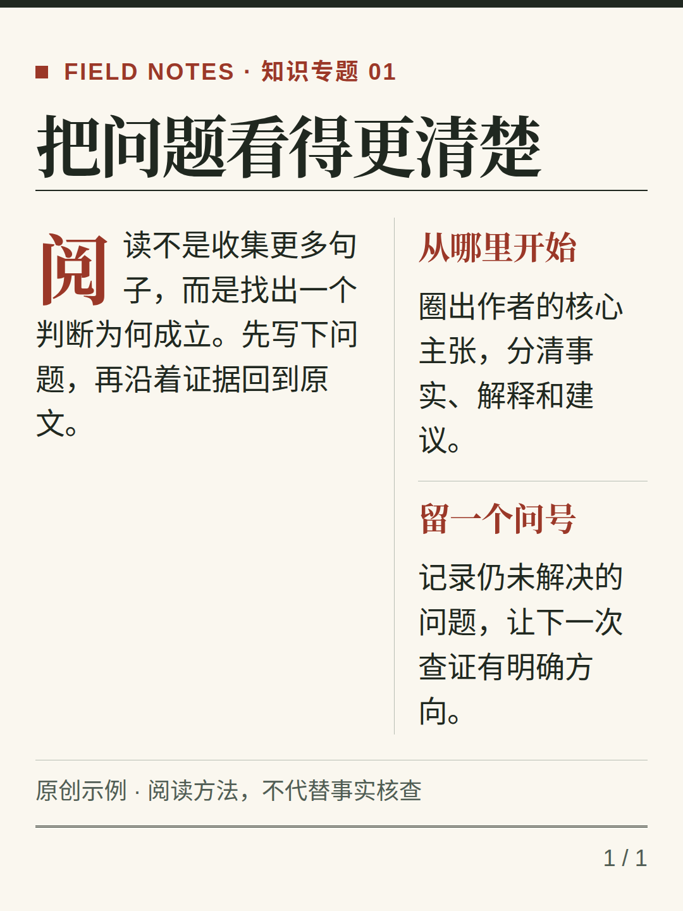
T01 · 科学 / 编辑杂志 已验收示例
专题封面与侧栏导读 专题开篇、概念导读
无需图片 · standard · v2
原始 PNG，未裁切；缩略图不是手机阅读验收。
T01 完整 Markdown 输入 · 原始 PNG · 定位此模板
结构、边界与复现 · T01
输入结构 一个 H1；开篇段落；一至两个 H2 侧栏。
不适用 / 限制 长文、宽表格和完整教程；可改用普通 explainer 分页。
推荐内容量 80–180 字，仅为选型参考，不保证放得下。
版本 / 构图 v2 · cover-sidebar · cover
注册示例 standard 密度 · mobile 阅读预设 · 3:4 · manual
源码支持画幅 portrait；支持不等于已验收。仅在 6 个模板上增加 8 个额外画幅组合：T04/T21 各增 square 与 slide，T05/T13 仅增 square，T24/T37 仅增 slide。当前预览仅绑定上面的精确 standard / 3:4 示例。八个指定短例已通过独立证据注册表绑定，相关输入、完整图、手机图和PDF见本条详情；T04/T21四组合为aspect-v2并保留v1 历史证据，T05/T13/T24/T37四组合为aspect-v1。其他内容仍须实测，见画幅说明。
其他密度 compact / standard / editorial 仅改变间距，不缩小字体。当前真实预览只证明 standard 注册示例；历史图只证明对应旧版，均不代替其他密度验收。
设计来源 Original md2card-skill composition, MIT
文字来源 Original demonstration text; not an attributed external quotation
素材来源 No external assets; local system fonts only
当前示例 SHA-256 4bc9e00e4b1fa63748f982fbfec4502c92d19ce1bbf5c8a001bbdf626cf356ab
已验收 PNG SHA-256 a2383f9baf4ade0203e178ca537791b813969cbfef17dafd41315628a8198d57
证据文件 SHA-256 48e838a2e5799b1f75fb99f6286fb0dde4aa03343ca554a069d5f1b9534379a3 在仓库根目录复现同一输入（需允许的 Chromium、中文字体与 Poppler 环境）：
node scripts/render.mjs examples/templates/T01.md --out output/T01 --size portrait --paginate manual --format all --strict --preview输出目录必须为空或不存在。命令使用当前代码；要复现历史截图，还需匹配记录中的代码、字体与环境。这里不执行渲染。
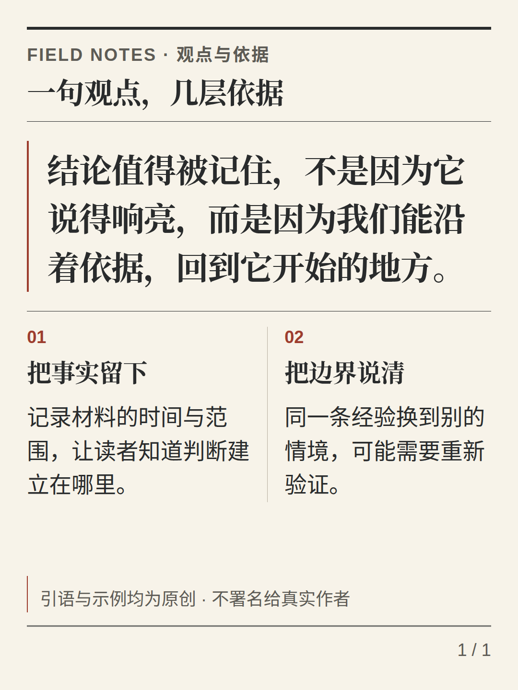
T02 · 科学 / 编辑杂志 已验收示例
引语特写与证据出处 观点摘引、证据提示与出处说明
无需图片 · standard · v2
原始 PNG，未裁切；缩略图不是手机阅读验收。
T02 完整 Markdown 输入 · 原始 PNG · 定位此模板
结构、边界与复现 · T02
输入结构 一个 H1；一个 25–45 字的引用块；两个 H2 证据短栏；来源写入 source，避免重复署名。
不适用 / 限制 长篇引文、三栏以上证据或宽表格；可拆成多张手动卡片，保留完整引文与出处。
推荐内容量 90–170 字，仅为选型参考，不保证放得下。
版本 / 构图 v2 · quotation-evidence · quote
注册示例 standard 密度 · mobile 阅读预设 · 3:4 · manual
源码支持画幅 portrait；支持不等于已验收。仅在 6 个模板上增加 8 个额外画幅组合：T04/T21 各增 square 与 slide，T05/T13 仅增 square，T24/T37 仅增 slide。当前预览仅绑定上面的精确 standard / 3:4 示例。八个指定短例已通过独立证据注册表绑定，相关输入、完整图、手机图和PDF见本条详情；T04/T21四组合为aspect-v2并保留v1 历史证据，T05/T13/T24/T37四组合为aspect-v1。其他内容仍须实测，见画幅说明。
其他密度 compact / standard / editorial 仅改变间距，不缩小字体。当前真实预览只证明 standard 注册示例；历史图只证明对应旧版，均不代替其他密度验收。
设计来源 Original md2card-skill composition, MIT
文字来源 Original demonstration text; not an attributed external quotation
素材来源 No external assets; local system fonts only
当前示例 SHA-256 c2cd7c46f452e9bc21bdebd4c2c0a4af072cba56623a04a124b804186a3db74f
已验收 PNG SHA-256 3468ea9d952357a4a37596c85210790a235d456c5a10a9fc9d43cefb9d9141f3
证据文件 SHA-256 48e838a2e5799b1f75fb99f6286fb0dde4aa03343ca554a069d5f1b9534379a3 在仓库根目录复现同一输入（需允许的 Chromium、中文字体与 Poppler 环境）：
node scripts/render.mjs examples/templates/T02.md --out output/T02 --size portrait --paginate manual --format all --strict --preview输出目录必须为空或不存在。命令使用当前代码；要复现历史截图，还需匹配记录中的代码、字体与环境。这里不执行渲染。
T03 · 科学 / 编辑杂志 已验收示例
图文分栏人物与概念介绍 一张竖图配人物练习、工艺介绍或单一概念
必需本地图片 · standard · v2
原始 PNG，未裁切；缩略图不是手机阅读验收。
T03 完整 Markdown 输入 · 原始 PNG · 定位此模板
结构、边界与复现 · T03
输入结构 一个 H1；一段短导语；两个短 H2；必须提供本地图片与说明。主文左侧、图片右侧，默认 contain 保全图片。
不适用 / 限制 长访谈、多人群像、宽截图和长图注；不要靠裁切或缩字塞入侧栏。示例人物和场景为 AI 生成虚构内容。
推荐内容量 90–150 字，仅为选型参考，不保证放得下。
版本 / 构图 v2 · portrait-editorial-spread · image-caption
注册示例 standard 密度 · mobile 阅读预设 · 3:4 · manual
源码支持画幅 portrait；支持不等于已验收。仅在 6 个模板上增加 8 个额外画幅组合：T04/T21 各增 square 与 slide，T05/T13 仅增 square，T24/T37 仅增 slide。当前预览仅绑定上面的精确 standard / 3:4 示例。八个指定短例已通过独立证据注册表绑定，相关输入、完整图、手机图和PDF见本条详情；T04/T21四组合为aspect-v2并保留v1 历史证据，T05/T13/T24/T37四组合为aspect-v1。其他内容仍须实测，见画幅说明。
其他密度 compact / standard / editorial 仅改变间距，不缩小字体。当前真实预览只证明 standard 注册示例；历史图只证明对应旧版，均不代替其他密度验收。
设计来源 Original md2card-skill composition, MIT
文字来源 Original demonstration text; not an attributed external quotation
素材来源 Original AI-generated fictional adult portrait, full frame retained; see examples/templates/assets/provenance.json and README.md.
当前示例 SHA-256 32713699ea30fa210323a72f980845c056f851197cedbd7907a774009b732ce7
已验收 PNG SHA-256 87165fbe85fb9f0c3e2bd4af49d16f9cdf979e0efd855f98133cf118be3ba3d1
证据文件 SHA-256 48e838a2e5799b1f75fb99f6286fb0dde4aa03343ca554a069d5f1b9534379a3 在仓库根目录复现同一输入（需允许的 Chromium、中文字体与 Poppler 环境）：
node scripts/render.mjs examples/templates/T03.md --out output/T03 --size portrait --paginate manual --format all --strict --preview输出目录必须为空或不存在。命令使用当前代码；要复现历史截图，还需匹配记录中的代码、字体与环境。这里不执行渲染。
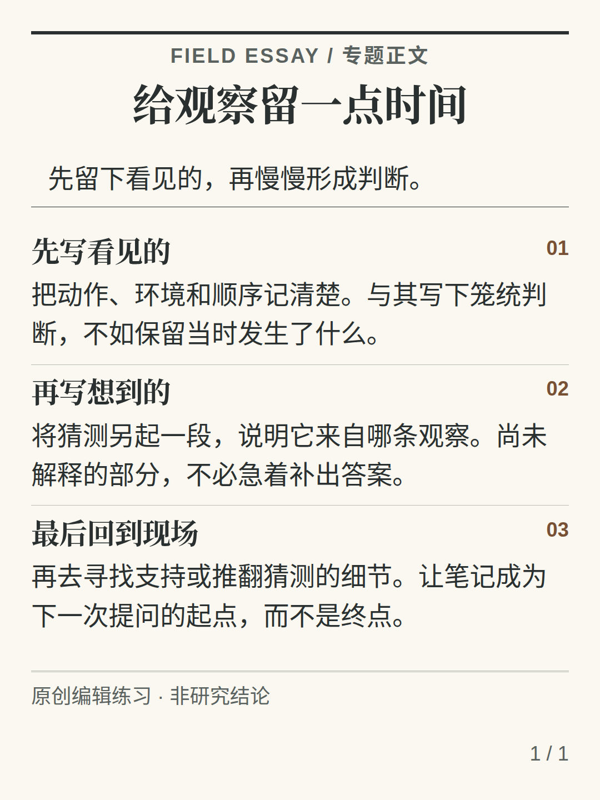
T04 · 科学 / 编辑杂志 已验收示例
专题长文分节 同一论点的连续说明、专题正文页与系列卡片
无需图片 · standard · v2
原始 PNG，未裁切；缩略图不是手机阅读验收。
T04 完整 Markdown 输入 · 原始 PNG · 定位此模板
结构、边界与复现 · T04
输入结构 一个 H1；一句导语；三个 H2 短节，以连续全宽段落展开。较长全文须保留原文并手动拆卡。
不适用 / 限制 超长单段、宽表格和并排论点；这是正文优先设计，不代表单张容纳任意长文。
推荐内容量 140–220 字，仅为选型参考，不保证放得下。
版本 / 构图 v2 · sectioned-editorial-essay · explainer
注册示例 standard 密度 · mobile 阅读预设 · 3:4 · manual
源码支持画幅 portrait / square / slide；支持不等于已验收。仅在 6 个模板上增加 8 个额外画幅组合：T04/T21 各增 square 与 slide，T05/T13 仅增 square，T24/T37 仅增 slide。当前预览仅绑定上面的精确 standard / 3:4 示例。八个指定短例已通过独立证据注册表绑定，相关输入、完整图、手机图和PDF见本条详情；T04/T21四组合为aspect-v2并保留v1 历史证据，T05/T13/T24/T37四组合为aspect-v1。其他内容仍须实测，见画幅说明。
其他密度 compact / standard / editorial 仅改变间距，不缩小字体。当前真实预览只证明 standard 注册示例；历史图只证明对应旧版，均不代替其他密度验收。
设计来源 Original md2card-skill composition, MIT
文字来源 Original demonstration text; not an attributed external quotation
素材来源 No external assets; local system fonts only
当前示例 SHA-256 3e8e082c87d98256917394dbf50213e350532387a655178f00fa0ac11b979c01
已验收 PNG SHA-256 5508d146a226ff729c56e871d4d476d8cee03810993bf21395d9063a42d57d0d
证据文件 SHA-256 48e838a2e5799b1f75fb99f6286fb0dde4aa03343ca554a069d5f1b9534379a3 square 精确短例 · aspect-v2 原始输入 · 完整 PNG · 375px · 390px · 原生 PDF · 独立画幅复核 slide 精确短例 · aspect-v2 原始输入 · 完整 PNG · 375px · 390px · 原生 PDF · 独立画幅复核 在仓库根目录复现同一输入（需允许的 Chromium、中文字体与 Poppler 环境）：
node scripts/render.mjs examples/templates/T04.md --out output/T04 --size portrait --paginate manual --format all --strict --preview输出目录必须为空或不存在。命令使用当前代码；要复现历史截图，还需匹配记录中的代码、字体与环境。这里不执行渲染。
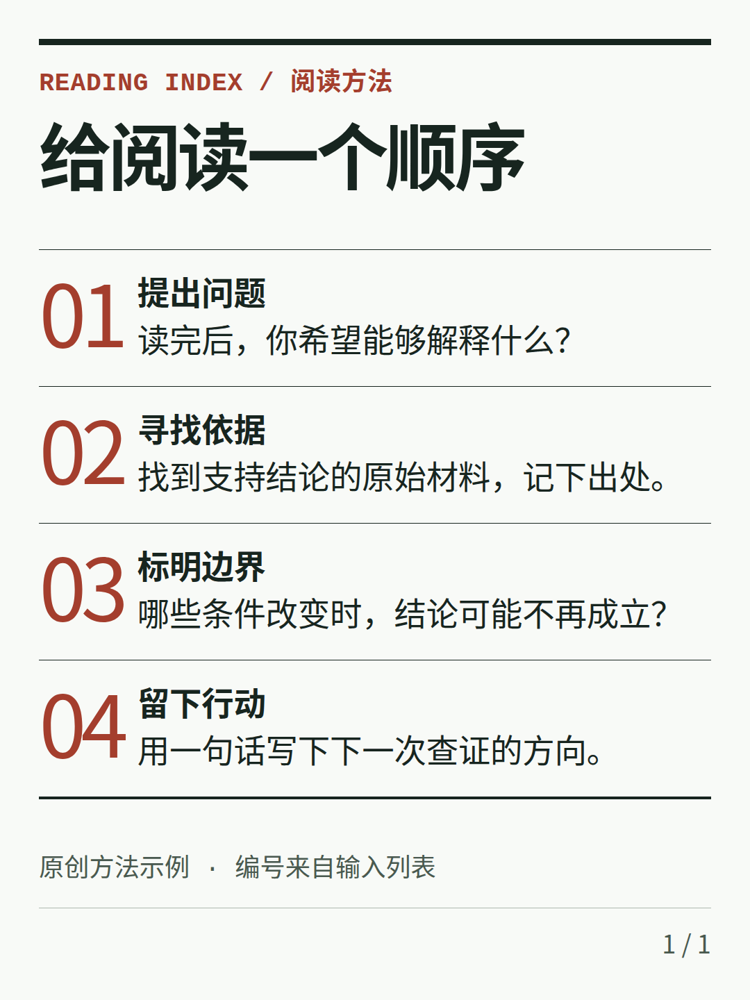
T05 · 瑞士极简 已验收示例
大数字索引清单 方法清单、阅读导航
无需图片 · standard · v2
原始 PNG，未裁切；缩略图不是手机阅读验收。
T05 完整 Markdown 输入 · 原始 PNG · 定位此模板
结构、边界与复现 · T05
输入结构 一个 H1；三至四个完整有序列表项。保留原始起始编号；本模板编号范围为 0–99，超出请用普通 steps。
不适用 / 限制 长嵌套列表或大段说明；可用普通 steps 自动分页。
推荐内容量 70–160 字，仅为选型参考，不保证放得下。
版本 / 构图 v2 · numbered-index · steps
注册示例 standard 密度 · mobile 阅读预设 · 3:4 · manual
源码支持画幅 portrait / square；支持不等于已验收。仅在 6 个模板上增加 8 个额外画幅组合：T04/T21 各增 square 与 slide，T05/T13 仅增 square，T24/T37 仅增 slide。当前预览仅绑定上面的精确 standard / 3:4 示例。八个指定短例已通过独立证据注册表绑定，相关输入、完整图、手机图和PDF见本条详情；T04/T21四组合为aspect-v2并保留v1 历史证据，T05/T13/T24/T37四组合为aspect-v1。其他内容仍须实测，见画幅说明。
其他密度 compact / standard / editorial 仅改变间距，不缩小字体。当前真实预览只证明 standard 注册示例；历史图只证明对应旧版，均不代替其他密度验收。
设计来源 Original md2card-skill composition, MIT
文字来源 Original demonstration text; not an attributed external quotation
素材来源 No external assets; local system fonts only
当前示例 SHA-256 a11c8cf4eda1f847d9035fa167b929e0c22d07a1d49fad2ca42baf825bfb6ed3
已验收 PNG SHA-256 8d39171b49e945f4f6b8016c29930b80a55dd2dd9360936b324c64622296b1df
证据文件 SHA-256 48e838a2e5799b1f75fb99f6286fb0dde4aa03343ca554a069d5f1b9534379a3 square 精确短例 · aspect-v1 原始输入 · 完整 PNG · 375px · 390px · 原生 PDF · 独立画幅复核 在仓库根目录复现同一输入（需允许的 Chromium、中文字体与 Poppler 环境）：
node scripts/render.mjs examples/templates/T05.md --out output/T05 --size portrait --paginate manual --format all --strict --preview输出目录必须为空或不存在。命令使用当前代码；要复现历史截图，还需匹配记录中的代码、字体与环境。这里不执行渲染。
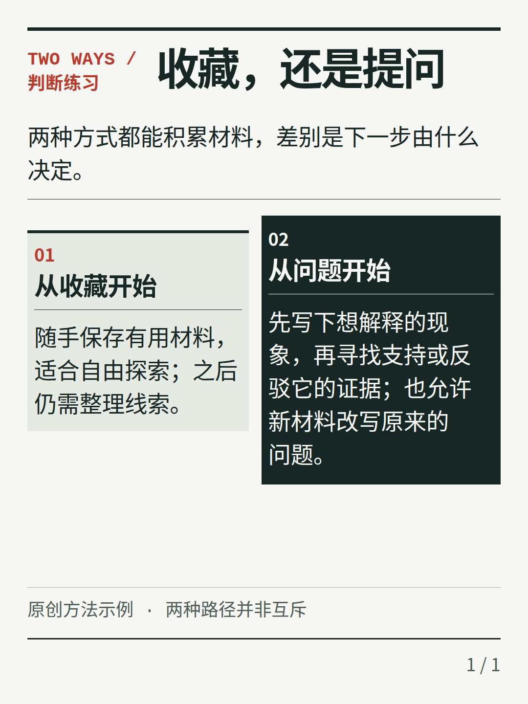
T06 · 瑞士极简 已验收示例
非对称双栏对比 两种方案、路径或判断方式的比较
无需图片 · standard · v3
原始 PNG，未裁切；缩略图不是手机阅读验收。
T06 完整 Markdown 输入 · 原始 PNG · 定位此模板
结构、边界与复现 · T06
输入结构 一个 H1；一段简短比较前提；两个接近等宽的 H2 对比栏，右栏保留较强视觉权重；后续 H2 为全宽补充。
不适用 / 限制 三个以上并列方案、长嵌套列表和宽表格；改用普通 comparison 多卡对比。
推荐内容量 80–140 字，仅为选型参考，不保证放得下。
版本 / 构图 v3 · asymmetric-comparison · comparison
注册示例 standard 密度 · mobile 阅读预设 · 3:4 · manual
源码支持画幅 portrait；支持不等于已验收。仅在 6 个模板上增加 8 个额外画幅组合：T04/T21 各增 square 与 slide，T05/T13 仅增 square，T24/T37 仅增 slide。当前预览仅绑定上面的精确 standard / 3:4 示例。八个指定短例已通过独立证据注册表绑定，相关输入、完整图、手机图和PDF见本条详情；T04/T21四组合为aspect-v2并保留v1 历史证据，T05/T13/T24/T37四组合为aspect-v1。其他内容仍须实测，见画幅说明。
其他密度 compact / standard / editorial 仅改变间距，不缩小字体。当前真实预览只证明 standard 注册示例；历史图只证明对应旧版，均不代替其他密度验收。
设计来源 Original md2card-skill composition, MIT
文字来源 Original demonstration text; not an attributed external quotation
素材来源 No external assets; local system fonts only
当前示例 SHA-256 a1d24b90a1dfeb3fa66d45b4dd0fdc56f71fdb7a2ab44e1c5564cd8a4c66620d
已验收 PNG SHA-256 d663889a7b3effa46fa4b0a64f32299112cde993ec5707f16ea8206a30d3ff06
证据文件 SHA-256 c5c510c524fed2aa3471caf0fc5e15f097b741cccf254ac05e8cb85ce8cae392 在仓库根目录复现同一输入（需允许的 Chromium、中文字体与 Poppler 环境）：
node scripts/render.mjs examples/templates/T06.md --out output/T06 --size portrait --paginate manual --format all --strict --preview输出目录必须为空或不存在。命令使用当前代码；要复现历史截图，还需匹配记录中的代码、字体与环境。这里不执行渲染。
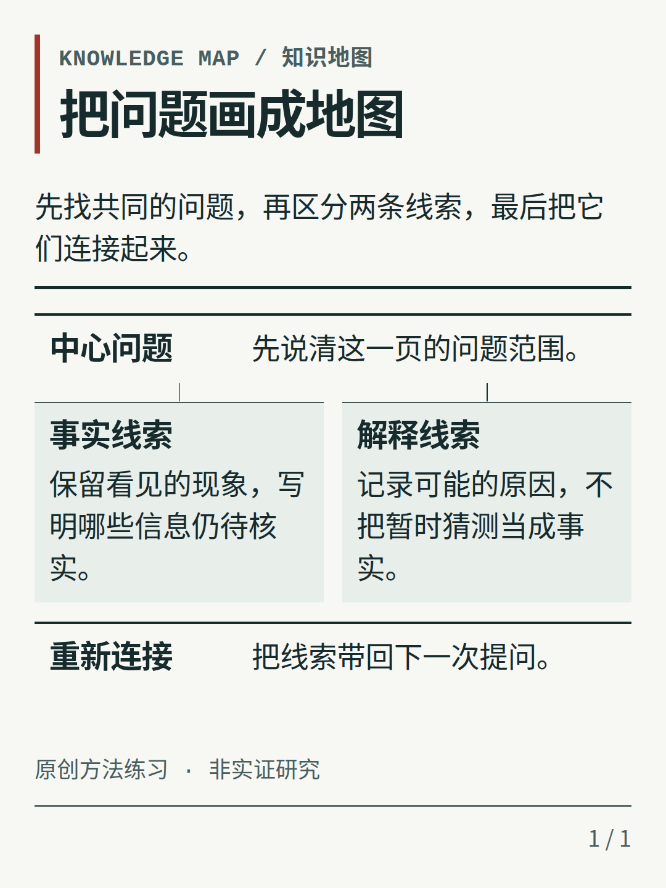
T07 · 瑞士极简 已验收示例
网格知识地图 概念总览、根问题与两条分支的知识地图
无需图片 · standard · v2
原始 PNG，未裁切；缩略图不是手机阅读验收。
T07 完整 Markdown 输入 · 原始 PNG · 定位此模板
结构、边界与复现 · T07
输入结构 一个 H1；一句问题前提；四个 H2，依次为全宽根概念、两个并列分支、全宽综合。阅读顺序沿原文。
不适用 / 限制 四个完全等价的分类、三层以上树状结构、宽表格；等价四分类可改用 T12。
推荐内容量 110–180 字，仅为选型参考，不保证放得下。
版本 / 构图 v2 · root-branches-synthesis-grid · explainer
注册示例 standard 密度 · mobile 阅读预设 · 3:4 · manual
源码支持画幅 portrait；支持不等于已验收。仅在 6 个模板上增加 8 个额外画幅组合：T04/T21 各增 square 与 slide，T05/T13 仅增 square，T24/T37 仅增 slide。当前预览仅绑定上面的精确 standard / 3:4 示例。八个指定短例已通过独立证据注册表绑定，相关输入、完整图、手机图和PDF见本条详情；T04/T21四组合为aspect-v2并保留v1 历史证据，T05/T13/T24/T37四组合为aspect-v1。其他内容仍须实测，见画幅说明。
其他密度 compact / standard / editorial 仅改变间距，不缩小字体。当前真实预览只证明 standard 注册示例；历史图只证明对应旧版，均不代替其他密度验收。
设计来源 Original md2card-skill composition, MIT
文字来源 Original demonstration text; not an attributed external quotation
素材来源 No external assets; local system fonts only
当前示例 SHA-256 a5c2b1e352e9fbf0046adbae2db9e9ffbf20b04127cc00a685228abb24f1859b
已验收 PNG SHA-256 d32688b8ece2900b31fdc3249f013af28b73e884adffe6b113d3ed5333cd6d4d
证据文件 SHA-256 48e838a2e5799b1f75fb99f6286fb0dde4aa03343ca554a069d5f1b9534379a3 在仓库根目录复现同一输入（需允许的 Chromium、中文字体与 Poppler 环境）：
node scripts/render.mjs examples/templates/T07.md --out output/T07 --size portrait --paginate manual --format all --strict --preview输出目录必须为空或不存在。命令使用当前代码；要复现历史截图，还需匹配记录中的代码、字体与环境。这里不执行渲染。
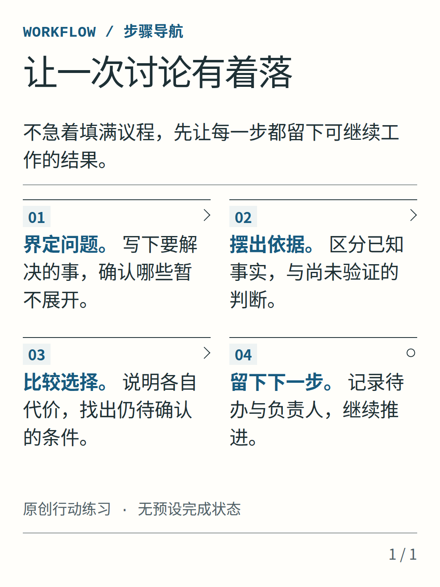
T08 · 瑞士极简 已验收示例
极简步骤导航 准备、执行与回看的短步骤路线
无需图片 · standard · v2
原始 PNG，未裁切；缩略图不是手机阅读验收。
T08 完整 Markdown 输入 · 原始 PNG · 定位此模板
结构、边界与复现 · T08
输入结构 一个 H1；一句导语；四个完整有序列表项，按先左后右、再到下一行阅读。原始编号保留，范围为 0–99。
不适用 / 限制 长嵌套清单、超过四个很长的步骤、超过两位的编号；可用普通 steps 分页。箭头与末项圆圈仅为导航装饰。
推荐内容量 100–170 字，仅为选型参考，不保证放得下。
版本 / 构图 v2 · paired-step-navigation · steps
注册示例 standard 密度 · mobile 阅读预设 · 3:4 · manual
源码支持画幅 portrait；支持不等于已验收。仅在 6 个模板上增加 8 个额外画幅组合：T04/T21 各增 square 与 slide，T05/T13 仅增 square，T24/T37 仅增 slide。当前预览仅绑定上面的精确 standard / 3:4 示例。八个指定短例已通过独立证据注册表绑定，相关输入、完整图、手机图和PDF见本条详情；T04/T21四组合为aspect-v2并保留v1 历史证据，T05/T13/T24/T37四组合为aspect-v1。其他内容仍须实测，见画幅说明。
其他密度 compact / standard / editorial 仅改变间距，不缩小字体。当前真实预览只证明 standard 注册示例；历史图只证明对应旧版，均不代替其他密度验收。
设计来源 Original md2card-skill composition, MIT
文字来源 Original demonstration text; not an attributed external quotation
素材来源 No external assets; local system fonts only
当前示例 SHA-256 830992687d024eb17381b32142842d5741341bc6df1dd69a3566080f813672a9
已验收 PNG SHA-256 9fb96fcc37b18eed4ce585ff3b83d5a72d05e7b24c9cc3b7fc188cdc6d5c5ee4
证据文件 SHA-256 48e838a2e5799b1f75fb99f6286fb0dde4aa03343ca554a069d5f1b9534379a3 在仓库根目录复现同一输入（需允许的 Chromium、中文字体与 Poppler 环境）：
node scripts/render.mjs examples/templates/T08.md --out output/T08 --size portrait --paginate manual --format all --strict --preview输出目录必须为空或不存在。命令使用当前代码；要复现历史截图，还需匹配记录中的代码、字体与环境。这里不执行渲染。
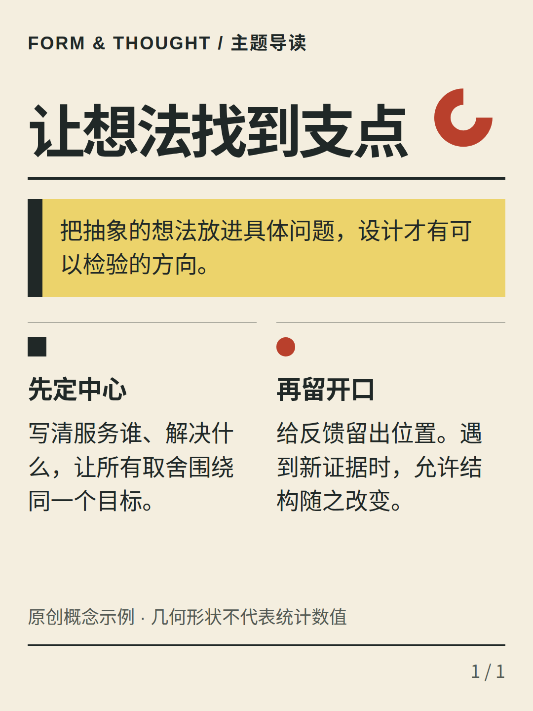
T09 · 包豪斯几何 已验收示例
几何主题封面 概念专题开篇、工作坊主题与方法导读
无需图片 · standard · v2
原始 PNG，未裁切；缩略图不是手机阅读验收。
T09 完整 Markdown 输入 · 原始 PNG · 定位此模板
结构、边界与复现 · T09
输入结构 一个 6–10 字 H1；一段导语；两个 H2 短节。圆弧为标题留出独立区域，几何标记区分两段。
不适用 / 限制 长标题、详细教程与密集数据；改用解释卡，不缩小正文来填入封面。
推荐内容量 80–150 字，仅为选型参考，不保证放得下。
版本 / 构图 v2 · geometric-cover · cover
注册示例 standard 密度 · mobile 阅读预设 · 3:4 · manual
源码支持画幅 portrait；支持不等于已验收。仅在 6 个模板上增加 8 个额外画幅组合：T04/T21 各增 square 与 slide，T05/T13 仅增 square，T24/T37 仅增 slide。当前预览仅绑定上面的精确 standard / 3:4 示例。八个指定短例已通过独立证据注册表绑定，相关输入、完整图、手机图和PDF见本条详情；T04/T21四组合为aspect-v2并保留v1 历史证据，T05/T13/T24/T37四组合为aspect-v1。其他内容仍须实测，见画幅说明。
其他密度 compact / standard / editorial 仅改变间距，不缩小字体。当前真实预览只证明 standard 注册示例；历史图只证明对应旧版，均不代替其他密度验收。
设计来源 Original md2card-skill composition, MIT
文字来源 Original demonstration text; not an attributed external quotation
素材来源 No external assets; local system fonts only
当前示例 SHA-256 ad9e2eb19c811d879ec0f0df75332c83e4c67fbadaba7928df9c829aa17b6bca
已验收 PNG SHA-256 05c0b45fca7a0f41096414eb3c7e581d0410094abb8538d8c27a9a1472d06f3e
证据文件 SHA-256 48e838a2e5799b1f75fb99f6286fb0dde4aa03343ca554a069d5f1b9534379a3 在仓库根目录复现同一输入（需允许的 Chromium、中文字体与 Poppler 环境）：
node scripts/render.mjs examples/templates/T09.md --out output/T09 --size portrait --paginate manual --format all --strict --preview输出目录必须为空或不存在。命令使用当前代码；要复现历史截图，还需匹配记录中的代码、字体与环境。这里不执行渲染。
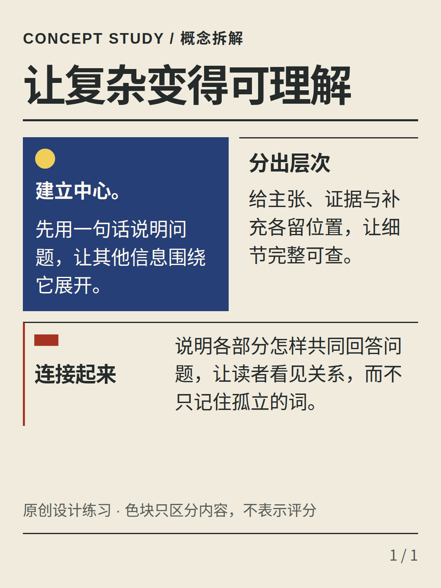
T10 · 包豪斯几何 已验收示例
模块拼贴概念卡 概念拆解、设计原则与三段式知识介绍
无需图片 · standard · v3
原始 PNG，未裁切；缩略图不是手机阅读验收。
T10 完整 Markdown 输入 · 原始 PNG · 定位此模板
结构、边界与复现 · T10
输入结构 一个 H1；一段概念导语；两个 H2。导语与第一节并列，第二节为全宽综合模块。
不适用 / 限制 宽表格、长代码和层层嵌套的论证；可改用普通 explainer 分页。
推荐内容量 80–140 字，仅为选型参考，不保证放得下。
版本 / 构图 v3 · modular-concept-collage · explainer
注册示例 standard 密度 · mobile 阅读预设 · 3:4 · manual
源码支持画幅 portrait；支持不等于已验收。仅在 6 个模板上增加 8 个额外画幅组合：T04/T21 各增 square 与 slide，T05/T13 仅增 square，T24/T37 仅增 slide。当前预览仅绑定上面的精确 standard / 3:4 示例。八个指定短例已通过独立证据注册表绑定，相关输入、完整图、手机图和PDF见本条详情；T04/T21四组合为aspect-v2并保留v1 历史证据，T05/T13/T24/T37四组合为aspect-v1。其他内容仍须实测，见画幅说明。
其他密度 compact / standard / editorial 仅改变间距，不缩小字体。当前真实预览只证明 standard 注册示例；历史图只证明对应旧版，均不代替其他密度验收。
设计来源 Original md2card-skill composition, MIT
文字来源 Original demonstration text; not an attributed external quotation
素材来源 No external assets; local system fonts only
当前示例 SHA-256 b1bed4b68c1dd452afbcc4b177513e7e11a90011d72f665c0975df556cd937aa
已验收 PNG SHA-256 df5fd8ade301bb483b13a6bcf6b97f6ffabfd278b708e81b9214f2f64f0e36ad
证据文件 SHA-256 c5c510c524fed2aa3471caf0fc5e15f097b741cccf254ac05e8cb85ce8cae392 在仓库根目录复现同一输入（需允许的 Chromium、中文字体与 Poppler 环境）：
node scripts/render.mjs examples/templates/T10.md --out output/T10 --size portrait --paginate manual --format all --strict --preview输出目录必须为空或不存在。命令使用当前代码；要复现历史截图，还需匹配记录中的代码、字体与环境。这里不执行渲染。
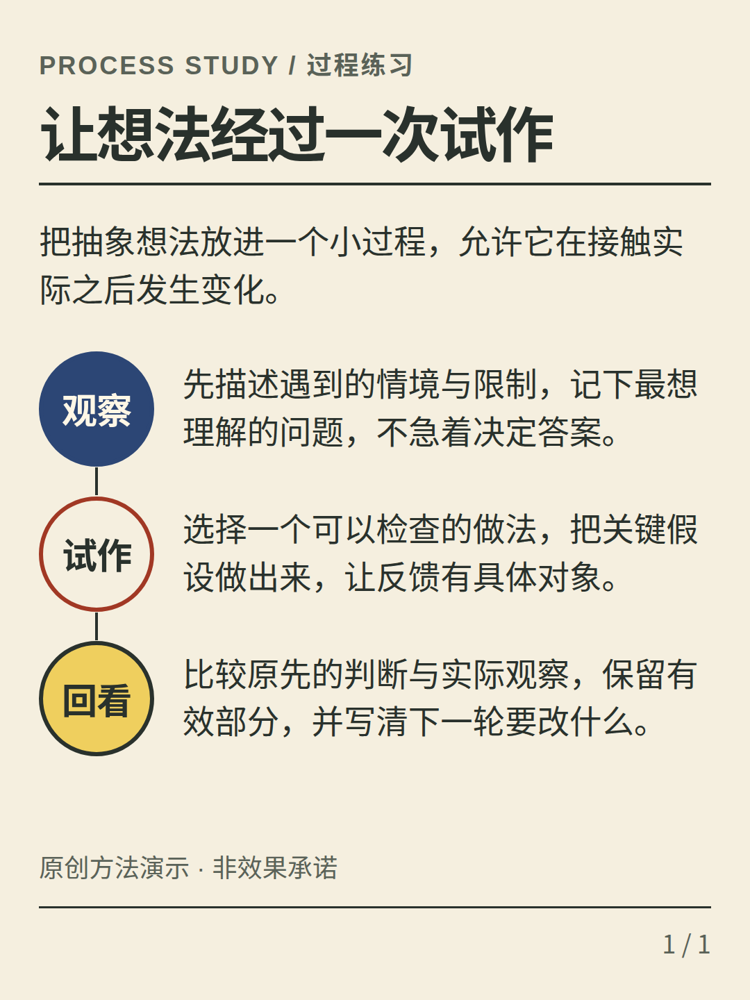
T11 · 包豪斯几何 已验收示例
圆形节点流程 三阶段观察、试作、反馈或概念转化过程
无需图片 · standard · v2
原始 PNG，未裁切；缩略图不是手机阅读验收。
T11 完整 Markdown 输入 · 原始 PNG · 定位此模板
结构、边界与复现 · T11
输入结构 一个 H1；一句导语；三个 H2，每个标题建议 2 字，直接成为圆形节点文字；完整说明排列在节点右侧。
不适用 / 限制 长节点标题、分支决策树或大量阶段；长标题会使节点自然变高，不会缩字或截断。
推荐内容量 100–180 字，仅为选型参考，不保证放得下。
版本 / 构图 v2 · circular-heading-node-flow · steps
注册示例 standard 密度 · mobile 阅读预设 · 3:4 · manual
源码支持画幅 portrait；支持不等于已验收。仅在 6 个模板上增加 8 个额外画幅组合：T04/T21 各增 square 与 slide，T05/T13 仅增 square，T24/T37 仅增 slide。当前预览仅绑定上面的精确 standard / 3:4 示例。八个指定短例已通过独立证据注册表绑定，相关输入、完整图、手机图和PDF见本条详情；T04/T21四组合为aspect-v2并保留v1 历史证据，T05/T13/T24/T37四组合为aspect-v1。其他内容仍须实测，见画幅说明。
其他密度 compact / standard / editorial 仅改变间距，不缩小字体。当前真实预览只证明 standard 注册示例；历史图只证明对应旧版，均不代替其他密度验收。
设计来源 Original md2card-skill composition, MIT
文字来源 Original demonstration text; not an attributed external quotation
素材来源 No external assets; local system fonts only
当前示例 SHA-256 4502d3b898bb1ccfe627927d971a9f3ae507c8848c651bce5a15a4bf44bf99bd
已验收 PNG SHA-256 6f70f2fb3209d264a6b5fd5c13a7c824f044dda6f763aff7347a43d5659b8403
证据文件 SHA-256 48e838a2e5799b1f75fb99f6286fb0dde4aa03343ca554a069d5f1b9534379a3 在仓库根目录复现同一输入（需允许的 Chromium、中文字体与 Poppler 环境）：
node scripts/render.mjs examples/templates/T11.md --out output/T11 --size portrait --paginate manual --format all --strict --preview输出目录必须为空或不存在。命令使用当前代码；要复现历史截图，还需匹配记录中的代码、字体与环境。这里不执行渲染。
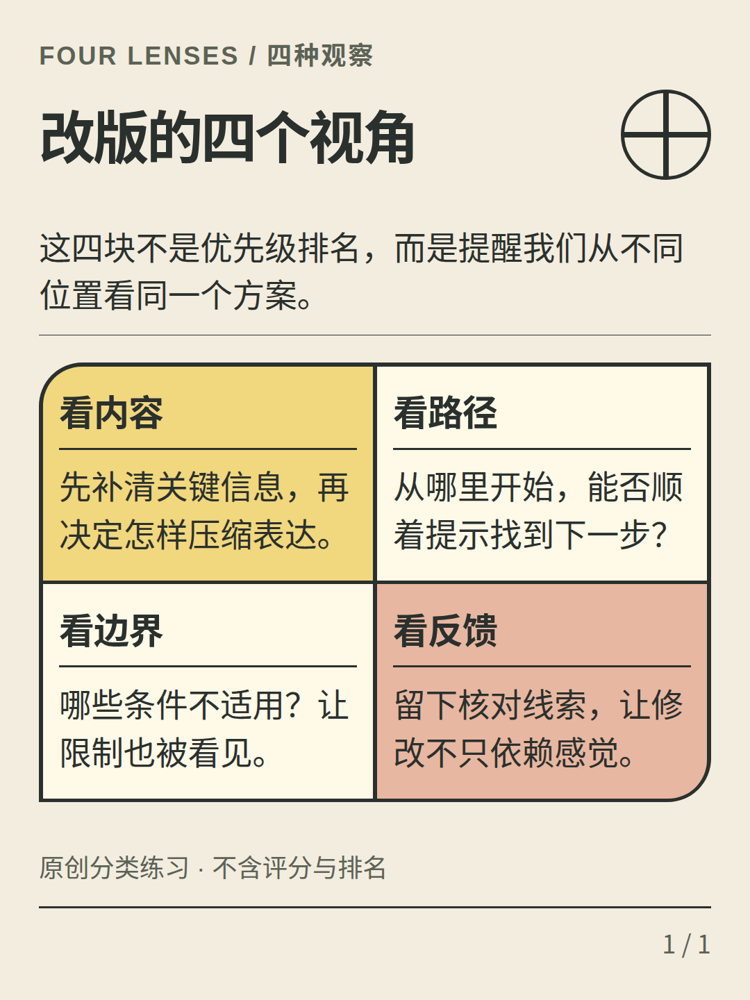
T12 · 包豪斯几何 已验收示例
几何分区四象限 四种平行情况、原则分类或四方向观察
无需图片 · standard · v2
原始 PNG，未裁切；缩略图不是手机阅读验收。
T12 完整 Markdown 输入 · 原始 PNG · 定位此模板
结构、边界与复现 · T12
输入结构 一个 H1；一句分类前提；四个 H2 组成等宽四分区，按原文行序阅读。没有隐含坐标、得分或排名。
不适用 / 限制 数值散点、需要明确坐标轴的矩阵或五个以上等价分类；附加 H2 保留为全宽补充，不冒充第五象限。
推荐内容量 110–180 字，仅为选型参考，不保证放得下。
版本 / 构图 v2 · geometric-quadrant-field · comparison
注册示例 standard 密度 · mobile 阅读预设 · 3:4 · manual
源码支持画幅 portrait；支持不等于已验收。仅在 6 个模板上增加 8 个额外画幅组合：T04/T21 各增 square 与 slide，T05/T13 仅增 square，T24/T37 仅增 slide。当前预览仅绑定上面的精确 standard / 3:4 示例。八个指定短例已通过独立证据注册表绑定，相关输入、完整图、手机图和PDF见本条详情；T04/T21四组合为aspect-v2并保留v1 历史证据，T05/T13/T24/T37四组合为aspect-v1。其他内容仍须实测，见画幅说明。
其他密度 compact / standard / editorial 仅改变间距，不缩小字体。当前真实预览只证明 standard 注册示例；历史图只证明对应旧版，均不代替其他密度验收。
设计来源 Original md2card-skill composition, MIT
文字来源 Original demonstration text; not an attributed external quotation
素材来源 No external assets; local system fonts only
当前示例 SHA-256 9e8261c88de67a4cf69b7604a866ac4efbfd49f50a8be400c6464ec6f8fd87c6
已验收 PNG SHA-256 703a6c7316c68c24a6bc0a7a55353448f15454c4a7f7ccff1d336aff5b54181d
证据文件 SHA-256 48e838a2e5799b1f75fb99f6286fb0dde4aa03343ca554a069d5f1b9534379a3 在仓库根目录复现同一输入（需允许的 Chromium、中文字体与 Poppler 环境）：
node scripts/render.mjs examples/templates/T12.md --out output/T12 --size portrait --paginate manual --format all --strict --preview输出目录必须为空或不存在。命令使用当前代码；要复现历史截图，还需匹配记录中的代码、字体与环境。这里不执行渲染。
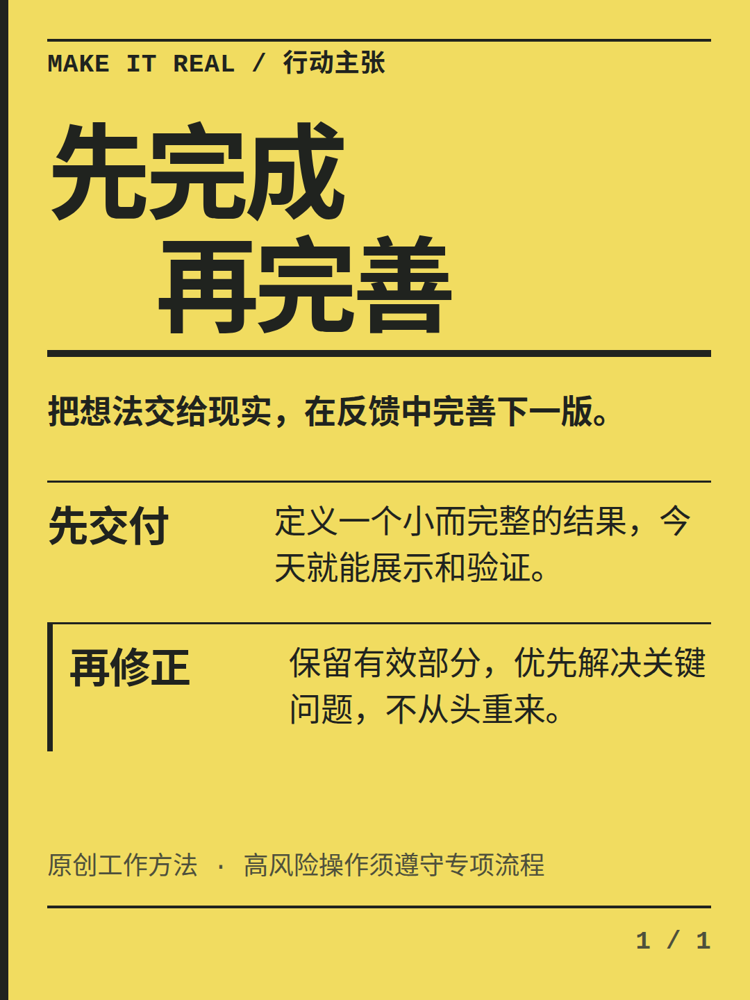
T13 · 新粗野海报 已验收示例
超大字宣言 行动主张、团队原则与明确的核心观点
无需图片 · standard · v2
原始 PNG，未裁切；缩略图不是手机阅读验收。
T13 完整 Markdown 输入 · 原始 PNG · 定位此模板
结构、边界与复现 · T13
输入结构 一个 6–10 字 H1 或连续 H1 标题组；一段导语；两个短 H2 论点条，标题以 2–4 字为宜。
不适用 / 限制 长标题、细节密集的政策与完整教程；拆卡并保留条件，不将宣言当作完整论证。
推荐内容量 80–150 字，仅为选型参考，不保证放得下。
版本 / 构图 v2 · declaration-poster · cover
注册示例 standard 密度 · mobile 阅读预设 · 3:4 · manual
源码支持画幅 portrait / square；支持不等于已验收。仅在 6 个模板上增加 8 个额外画幅组合：T04/T21 各增 square 与 slide，T05/T13 仅增 square，T24/T37 仅增 slide。当前预览仅绑定上面的精确 standard / 3:4 示例。八个指定短例已通过独立证据注册表绑定，相关输入、完整图、手机图和PDF见本条详情；T04/T21四组合为aspect-v2并保留v1 历史证据，T05/T13/T24/T37四组合为aspect-v1。其他内容仍须实测，见画幅说明。
其他密度 compact / standard / editorial 仅改变间距，不缩小字体。当前真实预览只证明 standard 注册示例；历史图只证明对应旧版，均不代替其他密度验收。
设计来源 Original md2card-skill composition, MIT
文字来源 Original demonstration text; not an attributed external quotation
素材来源 No external assets; local system fonts only
当前示例 SHA-256 c8b2d96b0deb77d699978ad0546d05d4cd68482bf3dcb68ffd6b95a1d3ecffd1
已验收 PNG SHA-256 4edc66fb34246e25dd6dd3932fa5bc8d1f4be8b9e88c92d99656f47430eec5f8
证据文件 SHA-256 48e838a2e5799b1f75fb99f6286fb0dde4aa03343ca554a069d5f1b9534379a3 square 精确短例 · aspect-v1 原始输入 · 完整 PNG · 375px · 390px · 原生 PDF · 独立画幅复核 在仓库根目录复现同一输入（需允许的 Chromium、中文字体与 Poppler 环境）：
node scripts/render.mjs examples/templates/T13.md --out output/T13 --size portrait --paginate manual --format all --strict --preview输出目录必须为空或不存在。命令使用当前代码；要复现历史截图，还需匹配记录中的代码、字体与环境。这里不执行渲染。
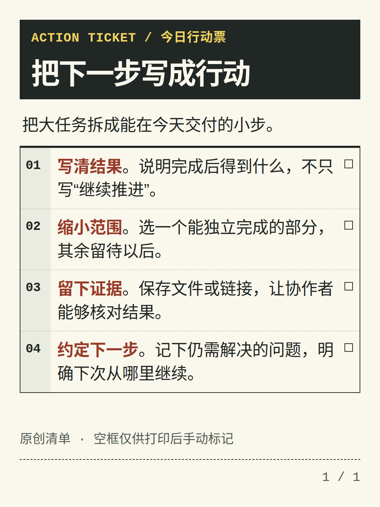
T14 · 新粗野海报 已验收示例
票据式行动清单 执行前检查、个人行动清单与打印任务票
无需图片 · standard · v2
原始 PNG，未裁切；缩略图不是手机阅读验收。
T14 完整 Markdown 输入 · 原始 PNG · 定位此模板
结构、边界与复现 · T14
输入结构 一个 H1；一句短导语；三至四项完整有序列表。编号保留输入起点，空框仅供打印后手动勾选。 本模板支持原始编号 0–99；超出请使用普通 steps。
不适用 / 限制 长嵌套任务、需要交互状态的待办应用；可用普通 steps 分页，不自动标记完成。
推荐内容量 80–150 字，仅为选型参考，不保证放得下。
版本 / 构图 v2 · action-ticket · steps
注册示例 standard 密度 · mobile 阅读预设 · 3:4 · manual
源码支持画幅 portrait；支持不等于已验收。仅在 6 个模板上增加 8 个额外画幅组合：T04/T21 各增 square 与 slide，T05/T13 仅增 square，T24/T37 仅增 slide。当前预览仅绑定上面的精确 standard / 3:4 示例。八个指定短例已通过独立证据注册表绑定，相关输入、完整图、手机图和PDF见本条详情；T04/T21四组合为aspect-v2并保留v1 历史证据，T05/T13/T24/T37四组合为aspect-v1。其他内容仍须实测，见画幅说明。
其他密度 compact / standard / editorial 仅改变间距，不缩小字体。当前真实预览只证明 standard 注册示例；历史图只证明对应旧版，均不代替其他密度验收。
设计来源 Original md2card-skill composition, MIT
文字来源 Original demonstration text; not an attributed external quotation
素材来源 No external assets; local system fonts only
当前示例 SHA-256 e142fce016b13c96cc8403435721f601251e566fc0115053a27a0e0ed16e3cde
已验收 PNG SHA-256 46d0113c6b6f42e8a8ef1bfa575bdcc8e68fd2f9d09144498340a001e817906d
证据文件 SHA-256 48e838a2e5799b1f75fb99f6286fb0dde4aa03343ca554a069d5f1b9534379a3 在仓库根目录复现同一输入（需允许的 Chromium、中文字体与 Poppler 环境）：
node scripts/render.mjs examples/templates/T14.md --out output/T14 --size portrait --paginate manual --format all --strict --preview输出目录必须为空或不存在。命令使用当前代码；要复现历史截图，还需匹配记录中的代码、字体与环境。这里不执行渲染。
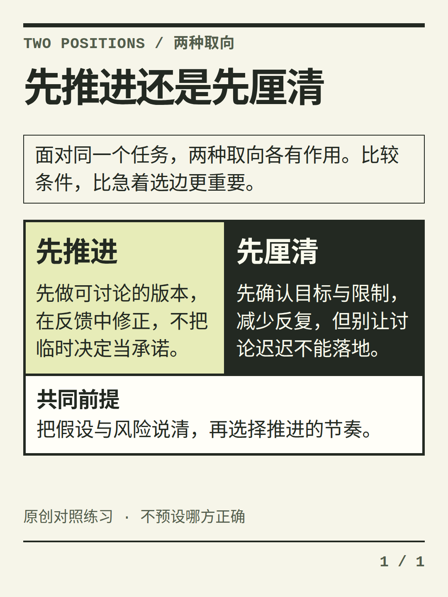
T15 · 新粗野海报 已验收示例
粗线双阵营对照 两种取向的公平对照及共同适用边界
无需图片 · standard · v2
原始 PNG，未裁切；缩略图不是手机阅读验收。
T15 完整 Markdown 输入 · 原始 PNG · 定位此模板
结构、边界与复现 · T15
输入结构 一个 H1；一句比较前提；两个 H2 等宽阵营；第三个 H2 为全宽共同条件。不同底色不代表胜负。
不适用 / 限制 三个以上方案、长条款及把复杂争议强行二分；完整限制须保留在补充区或下一张卡。
推荐内容量 110–180 字，仅为选型参考，不保证放得下。
版本 / 构图 v2 · two-camps-shared-wall · comparison
注册示例 standard 密度 · mobile 阅读预设 · 3:4 · manual
源码支持画幅 portrait；支持不等于已验收。仅在 6 个模板上增加 8 个额外画幅组合：T04/T21 各增 square 与 slide，T05/T13 仅增 square，T24/T37 仅增 slide。当前预览仅绑定上面的精确 standard / 3:4 示例。八个指定短例已通过独立证据注册表绑定，相关输入、完整图、手机图和PDF见本条详情；T04/T21四组合为aspect-v2并保留v1 历史证据，T05/T13/T24/T37四组合为aspect-v1。其他内容仍须实测，见画幅说明。
其他密度 compact / standard / editorial 仅改变间距，不缩小字体。当前真实预览只证明 standard 注册示例；历史图只证明对应旧版，均不代替其他密度验收。
设计来源 Original md2card-skill composition, MIT
文字来源 Original demonstration text; not an attributed external quotation
素材来源 No external assets; local system fonts only
当前示例 SHA-256 5150d0f69956b983202407f4152ee6efdda873466ddfe1c97da0cc67b7f3c82e
已验收 PNG SHA-256 2d95939b1756f6ff38c55f503f86d0e40d5719bc3e6dc3ab34c455a6d97ca13d
证据文件 SHA-256 48e838a2e5799b1f75fb99f6286fb0dde4aa03343ca554a069d5f1b9534379a3 在仓库根目录复现同一输入（需允许的 Chromium、中文字体与 Poppler 环境）：
node scripts/render.mjs examples/templates/T15.md --out output/T15 --size portrait --paginate manual --format all --strict --preview输出目录必须为空或不存在。命令使用当前代码；要复现历史截图，还需匹配记录中的代码、字体与环境。这里不执行渲染。
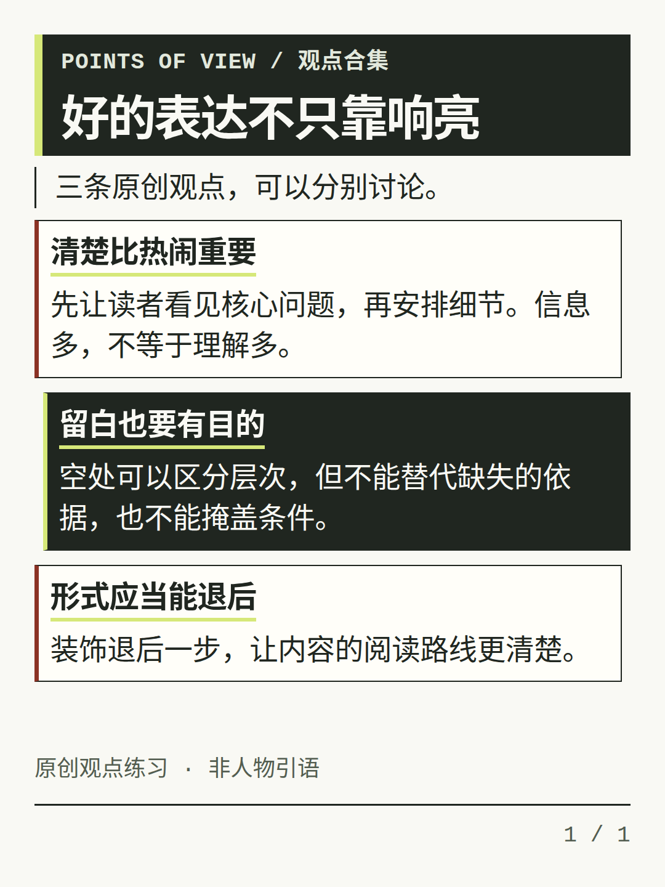
T16 · 新粗野海报 已验收示例
黑白撞色观点合集 同题短观点、创作原则与独立立场摘记
无需图片 · standard · v3
原始 PNG，未裁切；缩略图不是手机阅读验收。
T16 完整 Markdown 输入 · 原始 PNG · 定位此模板
结构、边界与复现 · T16
输入结构 一个 H1；一句总前提；三个 H2 原创短观点，每节标题上置、说明下置。交错纸片与点色区分观点。
不适用 / 限制 长篇人物引语、需要逐条出处的学术汇编；外部引语必须提供真实出处，不用样例冒充名言。
推荐内容量 110–190 字，仅为选型参考，不保证放得下。
版本 / 构图 v3 · offset-monochrome-opinion-sheets · explainer
注册示例 standard 密度 · mobile 阅读预设 · 3:4 · manual
源码支持画幅 portrait；支持不等于已验收。仅在 6 个模板上增加 8 个额外画幅组合：T04/T21 各增 square 与 slide，T05/T13 仅增 square，T24/T37 仅增 slide。当前预览仅绑定上面的精确 standard / 3:4 示例。八个指定短例已通过独立证据注册表绑定，相关输入、完整图、手机图和PDF见本条详情；T04/T21四组合为aspect-v2并保留v1 历史证据，T05/T13/T24/T37四组合为aspect-v1。其他内容仍须实测，见画幅说明。
其他密度 compact / standard / editorial 仅改变间距，不缩小字体。当前真实预览只证明 standard 注册示例；历史图只证明对应旧版，均不代替其他密度验收。
设计来源 Original md2card-skill composition, MIT
文字来源 Original demonstration text; not an attributed external quotation
素材来源 No external assets; local system fonts only
当前示例 SHA-256 b7a1ba6c4e7ce91c35fe868c2b7bad0bf558187cfa3d77177d5ebfe6f1cc361f
已验收 PNG SHA-256 b728dda4404ef26b220184984685e41f9fb26368d73d54b203fe99925037bc3e
证据文件 SHA-256 c5c510c524fed2aa3471caf0fc5e15f097b741cccf254ac05e8cb85ce8cae392 在仓库根目录复现同一输入（需允许的 Chromium、中文字体与 Poppler 环境）：
node scripts/render.mjs examples/templates/T16.md --out output/T16 --size portrait --paginate manual --format all --strict --preview输出目录必须为空或不存在。命令使用当前代码；要复现历史截图，还需匹配记录中的代码、字体与环境。这里不执行渲染。
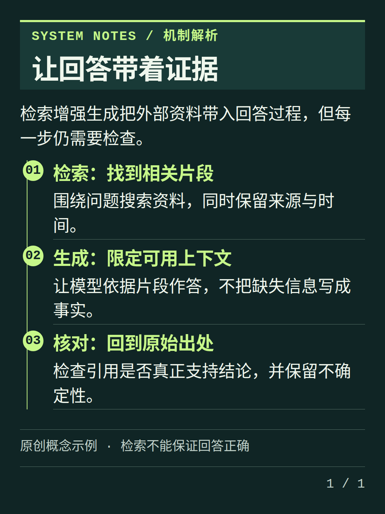
T17 · 深色科技 已验收示例
荧光重点机制解析 机制、原理与系统解释
无需图片 · standard · v2
原始 PNG，未裁切；缩略图不是手机阅读验收。
T17 完整 Markdown 输入 · 原始 PNG · 定位此模板
结构、边界与复现 · T17
输入结构 一个 H1；简短导语；三段 H2 机制说明。
不适用 / 限制 长代码或宽表格；可改用技术教程模板或普通 explainer。
推荐内容量 90–200 字，仅为选型参考，不保证放得下。
版本 / 构图 v2 · mechanism-rail · explainer
注册示例 standard 密度 · mobile 阅读预设 · 3:4 · manual
源码支持画幅 portrait；支持不等于已验收。仅在 6 个模板上增加 8 个额外画幅组合：T04/T21 各增 square 与 slide，T05/T13 仅增 square，T24/T37 仅增 slide。当前预览仅绑定上面的精确 standard / 3:4 示例。八个指定短例已通过独立证据注册表绑定，相关输入、完整图、手机图和PDF见本条详情；T04/T21四组合为aspect-v2并保留v1 历史证据，T05/T13/T24/T37四组合为aspect-v1。其他内容仍须实测，见画幅说明。
其他密度 compact / standard / editorial 仅改变间距，不缩小字体。当前真实预览只证明 standard 注册示例；历史图只证明对应旧版，均不代替其他密度验收。
设计来源 Original md2card-skill composition, MIT
文字来源 Original demonstration text; not an attributed external quotation
素材来源 No external assets; local system fonts only
当前示例 SHA-256 25bcaa60f48dc266d25806912de19a2b5010b12170508edc81a79099a4994246
已验收 PNG SHA-256 8a13d1220719c0a1409a0dd0c4c5d126f2294454ea5232f92a76773afaa51072
证据文件 SHA-256 48e838a2e5799b1f75fb99f6286fb0dde4aa03343ca554a069d5f1b9534379a3 在仓库根目录复现同一输入（需允许的 Chromium、中文字体与 Poppler 环境）：
node scripts/render.mjs examples/templates/T17.md --out output/T17 --size portrait --paginate manual --format all --strict --preview输出目录必须为空或不存在。命令使用当前代码；要复现历史截图，还需匹配记录中的代码、字体与环境。这里不执行渲染。
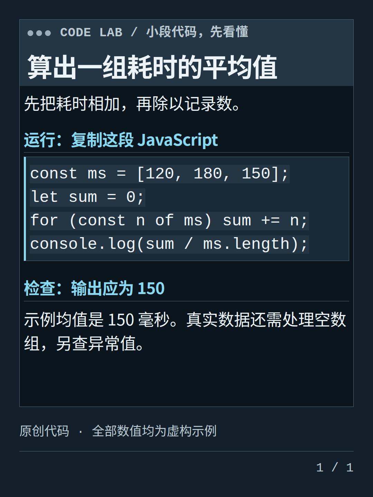
T18 · 深色科技 已验收示例
终端式技术教程 短代码演示、命令操作与结果核对
无需图片 · standard · v2
原始 PNG，未裁切；缩略图不是手机阅读验收。
T18 完整 Markdown 输入 · 原始 PNG · 定位此模板
结构、边界与复现 · T18
输入结构 一个 H1；简短导语；两个 H2 分别放真实代码和结果说明。建议一段不超过六行的短代码。
不适用 / 限制 长函数、超长命令或宽表格；请拆成手动卡片或使用普通 explainer 自动分页，不缩小代码。
推荐内容量 60–140 字，仅为选型参考，不保证放得下。
版本 / 构图 v2 · terminal-tutorial · explainer
注册示例 standard 密度 · mobile 阅读预设 · 3:4 · manual
源码支持画幅 portrait；支持不等于已验收。仅在 6 个模板上增加 8 个额外画幅组合：T04/T21 各增 square 与 slide，T05/T13 仅增 square，T24/T37 仅增 slide。当前预览仅绑定上面的精确 standard / 3:4 示例。八个指定短例已通过独立证据注册表绑定，相关输入、完整图、手机图和PDF见本条详情；T04/T21四组合为aspect-v2并保留v1 历史证据，T05/T13/T24/T37四组合为aspect-v1。其他内容仍须实测，见画幅说明。
其他密度 compact / standard / editorial 仅改变间距，不缩小字体。当前真实预览只证明 standard 注册示例；历史图只证明对应旧版，均不代替其他密度验收。
设计来源 Original md2card-skill composition, MIT
文字来源 Original demonstration text; not an attributed external quotation
素材来源 No external assets; local system fonts only
当前示例 SHA-256 e80a9e0e61f48cf3483dab3e85972858a8811f8faceece5390b1eb8595fb12fb
已验收 PNG SHA-256 5319dd4b1ef08ce3ee871d565bb7d8fd1239327b0b87c9de05fe002227191f06
证据文件 SHA-256 48e838a2e5799b1f75fb99f6286fb0dde4aa03343ca554a069d5f1b9534379a3 在仓库根目录复现同一输入（需允许的 Chromium、中文字体与 Poppler 环境）：
node scripts/render.mjs examples/templates/T18.md --out output/T18 --size portrait --paginate manual --format all --strict --preview输出目录必须为空或不存在。命令使用当前代码；要复现历史截图，还需匹配记录中的代码、字体与环境。这里不执行渲染。
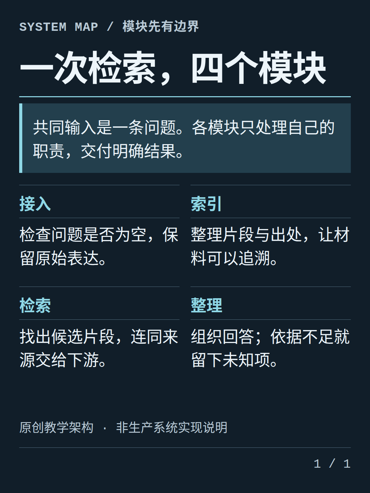
T19 · 深色科技 已验收示例
系统模块架构 解释系统的模块边界、输入与职责
无需图片 · standard · v3
原始 PNG，未裁切；缩略图不是手机阅读验收。
T19 完整 Markdown 输入 · 原始 PNG · 定位此模板
结构、边界与复现 · T19
输入结构 一个 H1；导语说明系统输入；四个 H2 分别命名模块并说明职责，形成两列两行的模块矩阵。模块顺序沿用原文。
不适用 / 限制 复杂拓扑、长 API 清单或需要真实箭头语义的架构图；请提供专门图示或拆为手动卡片，不用装饰冒充连接关系。
推荐内容量 80–160 字，仅为选型参考，不保证放得下。
版本 / 构图 v3 · shared-input-module-matrix · explainer
注册示例 standard 密度 · mobile 阅读预设 · 3:4 · manual
源码支持画幅 portrait；支持不等于已验收。仅在 6 个模板上增加 8 个额外画幅组合：T04/T21 各增 square 与 slide，T05/T13 仅增 square，T24/T37 仅增 slide。当前预览仅绑定上面的精确 standard / 3:4 示例。八个指定短例已通过独立证据注册表绑定，相关输入、完整图、手机图和PDF见本条详情；T04/T21四组合为aspect-v2并保留v1 历史证据，T05/T13/T24/T37四组合为aspect-v1。其他内容仍须实测，见画幅说明。
其他密度 compact / standard / editorial 仅改变间距，不缩小字体。当前真实预览只证明 standard 注册示例；历史图只证明对应旧版，均不代替其他密度验收。
设计来源 Original md2card-skill composition, MIT
文字来源 Original demonstration text; not an attributed external quotation
素材来源 No external assets; local system fonts only
当前示例 SHA-256 32f5ae623299ddc4b74435ade77f31e2fe93f0686db3983692b0a035e248c17a
已验收 PNG SHA-256 da7d9582fb316c136661fb4f9783971d434ce92274a231d0f9842ea4a41c794f
证据文件 SHA-256 c5c510c524fed2aa3471caf0fc5e15f097b741cccf254ac05e8cb85ce8cae392 在仓库根目录复现同一输入（需允许的 Chromium、中文字体与 Poppler 环境）：
node scripts/render.mjs examples/templates/T19.md --out output/T19 --size portrait --paginate manual --format all --strict --preview输出目录必须为空或不存在。命令使用当前代码；要复现历史截图，还需匹配记录中的代码、字体与环境。这里不执行渲染。
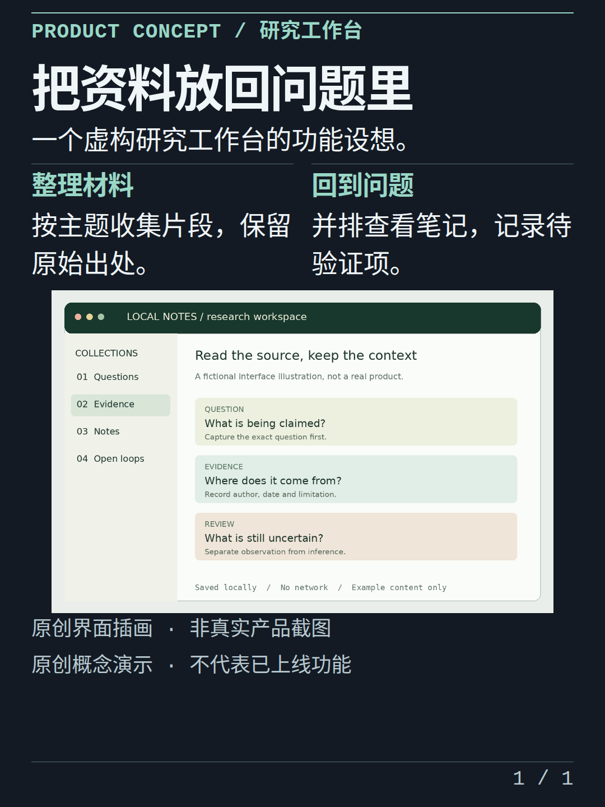
T20 · 深色科技 已验收示例
深色产品功能展示 展示产品主张、两个功能与一幅完整界面图
必需本地图片 · standard · v3
原始 PNG，未裁切；缩略图不是手机阅读验收。
T20 完整 Markdown 输入 · 原始 PNG · 定位此模板
结构、边界与复现 · T20
输入结构 一个 H1；一句导语；两个 H2 功能短说明；image 必须提供本地图片，alt 与 caption 说明图像性质。按标题、正文、图像、来源的 DOM 顺序展示。
不适用 / 限制 需要在手机上阅读密集界面小字、长功能列表或无图内容；图内细节不能代替图外正文，请改用专门界面细节卡或文本模板。
推荐内容量 55–115 字，仅为选型参考，不保证放得下。
版本 / 构图 v3 · feature-pair-interface-stage · image-caption
注册示例 standard 密度 · mobile 阅读预设 · 3:4 · manual
源码支持画幅 portrait；支持不等于已验收。仅在 6 个模板上增加 8 个额外画幅组合：T04/T21 各增 square 与 slide，T05/T13 仅增 square，T24/T37 仅增 slide。当前预览仅绑定上面的精确 standard / 3:4 示例。八个指定短例已通过独立证据注册表绑定，相关输入、完整图、手机图和PDF见本条详情；T04/T21四组合为aspect-v2并保留v1 历史证据，T05/T13/T24/T37四组合为aspect-v1。其他内容仍须实测，见画幅说明。
其他密度 compact / standard / editorial 仅改变间距，不缩小字体。当前真实预览只证明 standard 注册示例；历史图只证明对应旧版，均不代替其他密度验收。
设计来源 Original md2card-skill composition, MIT
文字来源 Original demonstration text; not an attributed external quotation
素材来源 Original programmatic fictional interface illustration, not a screenshot of an existing product; see examples/templates/assets/provenance.json and README.md.
当前示例 SHA-256 0b56fdfa68cf2f94e3d8249cf48beaebe1de3941dc38cd2f22eb631b80c9f483
已验收 PNG SHA-256 eabf60c0f2fb1334df8f14c197401c5a24c65e9ccc3494e92af13ed3beda34cc
证据文件 SHA-256 c5c510c524fed2aa3471caf0fc5e15f097b741cccf254ac05e8cb85ce8cae392 在仓库根目录复现同一输入（需允许的 Chromium、中文字体与 Poppler 环境）：
node scripts/render.mjs examples/templates/T20.md --out output/T20 --size portrait --paginate manual --format all --strict --preview输出目录必须为空或不存在。命令使用当前代码；要复现历史截图，还需匹配记录中的代码、字体与环境。这里不执行渲染。
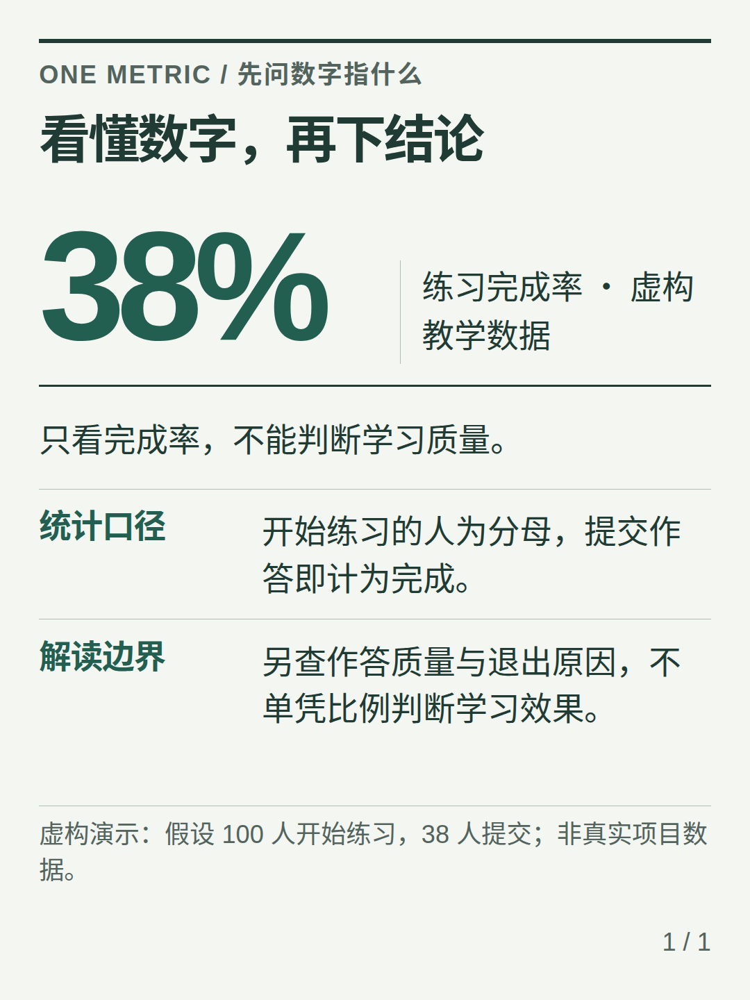
T21 · 数据与商业 已验收示例
单指标聚焦 突出一个指标，同时交代定义、范围与限制
无需图片 · standard · v2
原始 PNG，未裁切；缩略图不是手机阅读验收。
T21 完整 Markdown 输入 · 原始 PNG · 定位此模板
结构、边界与复现 · T21
输入结构 必须提供非空 metric 和 label；一个 H1；metric 和 label 提供指标与完整名称；导语后用两个 H2 分别说明口径与限制。
不适用 / 限制 多个竞争指标、超长数值、缺少分母或依据的数据；可改用 T22 或普通 explainer。
推荐内容量 70–150 字，仅为选型参考，不保证放得下。
版本 / 构图 v2 · single-metric-focus · statistic
注册示例 standard 密度 · mobile 阅读预设 · 3:4 · manual
源码支持画幅 portrait / square / slide；支持不等于已验收。仅在 6 个模板上增加 8 个额外画幅组合：T04/T21 各增 square 与 slide，T05/T13 仅增 square，T24/T37 仅增 slide。当前预览仅绑定上面的精确 standard / 3:4 示例。八个指定短例已通过独立证据注册表绑定，相关输入、完整图、手机图和PDF见本条详情；T04/T21四组合为aspect-v2并保留v1 历史证据，T05/T13/T24/T37四组合为aspect-v1。其他内容仍须实测，见画幅说明。
其他密度 compact / standard / editorial 仅改变间距，不缩小字体。当前真实预览只证明 standard 注册示例；历史图只证明对应旧版，均不代替其他密度验收。
设计来源 Original md2card-skill composition, MIT
文字来源 Original demonstration text; not an attributed external quotation
素材来源 No external assets; local system fonts only
当前示例 SHA-256 942ff0c189d5fb1c331d833b2626f0bd71bc777e9725e3be377636e76e5ddf8a
已验收 PNG SHA-256 d4aebb10c8f15591ba926ae849e3c8badb0666d317c2c4eb01fa49b13265d328
证据文件 SHA-256 48e838a2e5799b1f75fb99f6286fb0dde4aa03343ca554a069d5f1b9534379a3 square 精确短例 · aspect-v2 原始输入 · 完整 PNG · 375px · 390px · 原生 PDF · 独立画幅复核 slide 精确短例 · aspect-v2 原始输入 · 完整 PNG · 375px · 390px · 原生 PDF · 独立画幅复核 在仓库根目录复现同一输入（需允许的 Chromium、中文字体与 Poppler 环境）：
node scripts/render.mjs examples/templates/T21.md --out output/T21 --size portrait --paginate manual --format all --strict --preview输出目录必须为空或不存在。命令使用当前代码；要复现历史截图，还需匹配记录中的代码、字体与环境。这里不执行渲染。
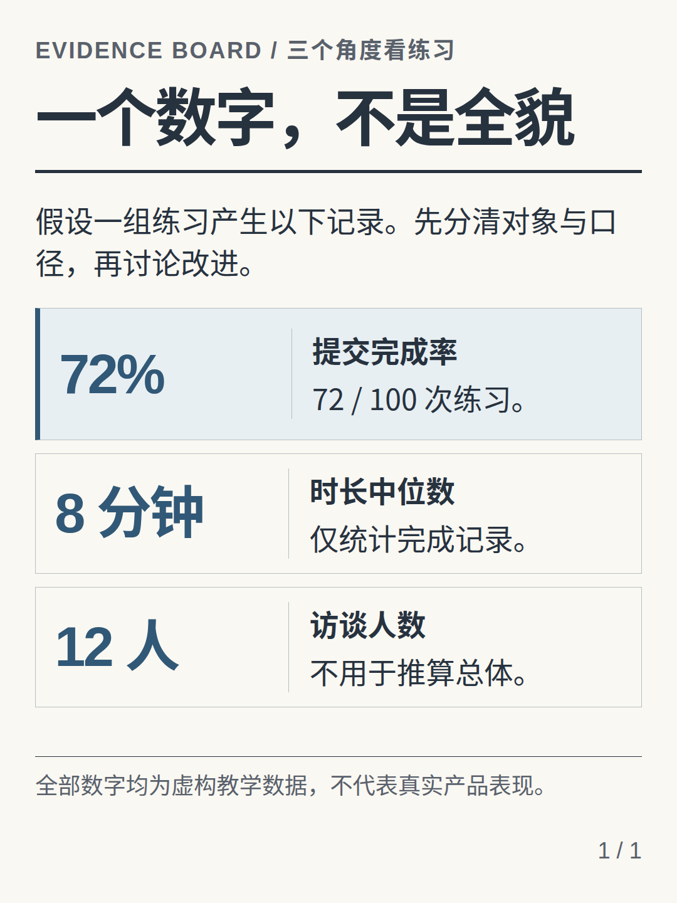
T22 · 数据与商业 已验收示例
三指标证据板 用三组指标与证据说明同一问题
无需图片 · standard · v3
原始 PNG，未裁切；缩略图不是手机阅读验收。
T22 完整 Markdown 输入 · 原始 PNG · 定位此模板
结构、边界与复现 · T22
输入结构 一个 H1；简短导语；恰好三个 H2，每个 H2 写短指标值，其后一个段落以加粗指标名开头，再说明分母或限定条件。
不适用 / 限制 需要横轴刻度的图表、超过三个指标或长篇方法学；请使用数据图或普通 explainer，不伪造指标凑版。
推荐内容量 80–160 字，仅为选型参考，不保证放得下。
版本 / 构图 v3 · three-metric-evidence-board · statistic
注册示例 standard 密度 · mobile 阅读预设 · 3:4 · manual
源码支持画幅 portrait；支持不等于已验收。仅在 6 个模板上增加 8 个额外画幅组合：T04/T21 各增 square 与 slide，T05/T13 仅增 square，T24/T37 仅增 slide。当前预览仅绑定上面的精确 standard / 3:4 示例。八个指定短例已通过独立证据注册表绑定，相关输入、完整图、手机图和PDF见本条详情；T04/T21四组合为aspect-v2并保留v1 历史证据，T05/T13/T24/T37四组合为aspect-v1。其他内容仍须实测，见画幅说明。
其他密度 compact / standard / editorial 仅改变间距，不缩小字体。当前真实预览只证明 standard 注册示例；历史图只证明对应旧版，均不代替其他密度验收。
设计来源 Original md2card-skill composition, MIT
文字来源 Original demonstration text; not an attributed external quotation
素材来源 No external assets; local system fonts only
当前示例 SHA-256 cbef06e848d7a07fd6bd43f01d9a663a176290957b3a76558e6783c98b74801f
已验收 PNG SHA-256 fcc68dc89c89caa701000d71c9c981387ad2aee3071bdd0ed09aa3fe8b7e20ab
证据文件 SHA-256 c5c510c524fed2aa3471caf0fc5e15f097b741cccf254ac05e8cb85ce8cae392 在仓库根目录复现同一输入（需允许的 Chromium、中文字体与 Poppler 环境）：
node scripts/render.mjs examples/templates/T22.md --out output/T22 --size portrait --paginate manual --format all --strict --preview输出目录必须为空或不存在。命令使用当前代码；要复现历史截图，还需匹配记录中的代码、字体与环境。这里不执行渲染。
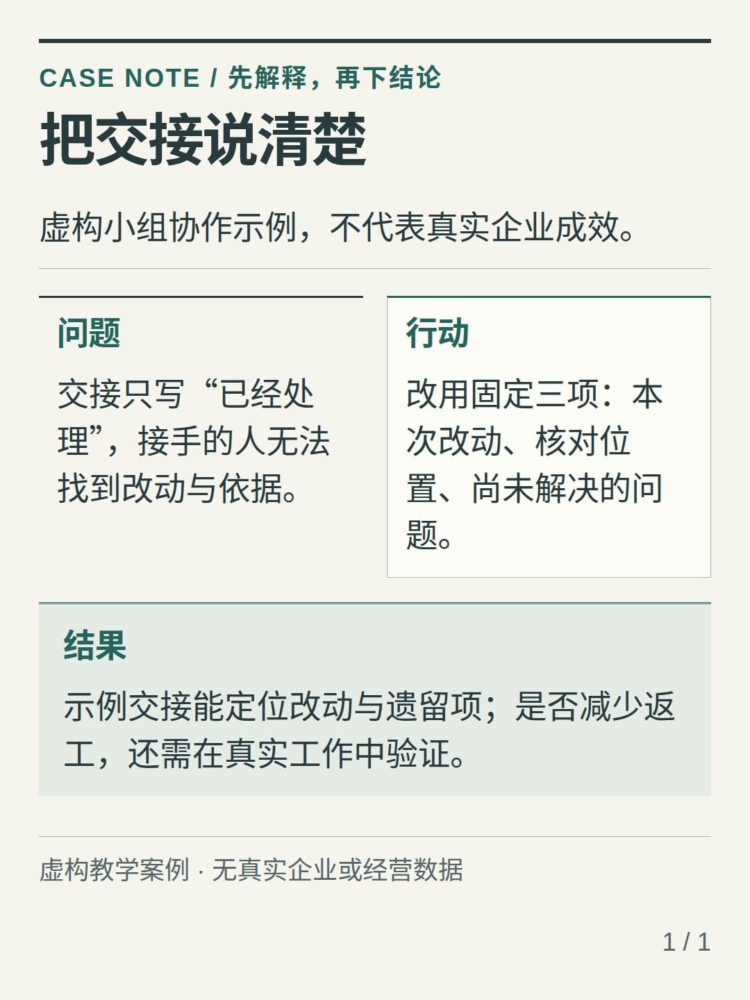
T23 · 数据与商业 已验收示例
问题—行动—结果案例 说明案例背景、行动与有依据的结果边界
无需图片 · standard · v2
原始 PNG，未裁切；缩略图不是手机阅读验收。
T23 完整 Markdown 输入 · 原始 PNG · 定位此模板
结构、边界与复现 · T23
输入结构 一个 H1；导语交代案例性质；三个 H2 依次为问题、行动和结果。前两节并列，结果跨栏；假设或示例需明确标注。
不适用 / 限制 没有来源的企业业绩、虚构真实公司成效、需要多指标证据的方法学报告；保留证据与限制，必要时改用多卡案例。
推荐内容量 90–170 字，仅为选型参考，不保证放得下。
版本 / 构图 v2 · problem-action-result-bridge · case-study
注册示例 standard 密度 · mobile 阅读预设 · 3:4 · manual
源码支持画幅 portrait；支持不等于已验收。仅在 6 个模板上增加 8 个额外画幅组合：T04/T21 各增 square 与 slide，T05/T13 仅增 square，T24/T37 仅增 slide。当前预览仅绑定上面的精确 standard / 3:4 示例。八个指定短例已通过独立证据注册表绑定，相关输入、完整图、手机图和PDF见本条详情；T04/T21四组合为aspect-v2并保留v1 历史证据，T05/T13/T24/T37四组合为aspect-v1。其他内容仍须实测，见画幅说明。
其他密度 compact / standard / editorial 仅改变间距，不缩小字体。当前真实预览只证明 standard 注册示例；历史图只证明对应旧版，均不代替其他密度验收。
设计来源 Original md2card-skill composition, MIT
文字来源 Original demonstration text; not an attributed external quotation
素材来源 No external assets; local system fonts only
当前示例 SHA-256 9e21c45cc409b469aacb23f905a632560fbf5a4c69de01e8a8edbda96cfb6ed6
已验收 PNG SHA-256 842228c7c9143dcbd520ca58acc4eb912851a5ddcefe6094e5afbf662a24bb0b
证据文件 SHA-256 48e838a2e5799b1f75fb99f6286fb0dde4aa03343ca554a069d5f1b9534379a3 在仓库根目录复现同一输入（需允许的 Chromium、中文字体与 Poppler 环境）：
node scripts/render.mjs examples/templates/T23.md --out output/T23 --size portrait --paginate manual --format all --strict --preview输出目录必须为空或不存在。命令使用当前代码；要复现历史截图，还需匹配记录中的代码、字体与环境。这里不执行渲染。
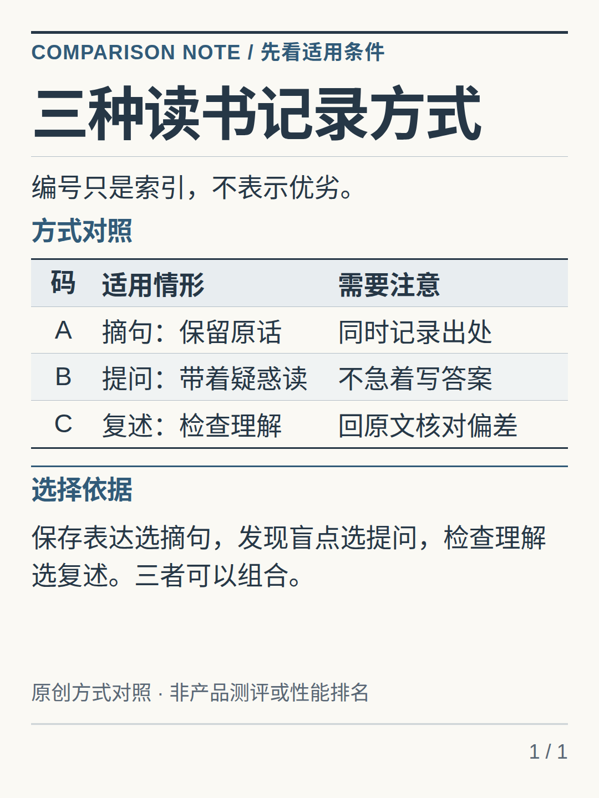
T24 · 数据与商业 已验收示例
报告式对比表 用真实三列表格对照方式、适用情形与限制
无需图片 · standard · v3
原始 PNG，未裁切；缩略图不是手机阅读验收。
T24 完整 Markdown 输入 · 原始 PNG · 定位此模板
结构、边界与复现 · T24
输入结构 一个 H1；短导语；第一 H2 下为三列表格，第一列只放 1–2 位代码或短数字，后两列为解释；第二 H2 写选择依据。推荐三行表体，全文保持正文字号。
不适用 / 限制 长名称首列、超过三列的宽表、长表体或大段单元格；请用其他表格卡或手动分卡，不缩小单元格和代码。
推荐内容量 90–170 字，仅为选型参考，不保证放得下。
版本 / 构图 v3 · report-table-decision-note · comparison
注册示例 standard 密度 · mobile 阅读预设 · 3:4 · manual
源码支持画幅 portrait / slide；支持不等于已验收。仅在 6 个模板上增加 8 个额外画幅组合：T04/T21 各增 square 与 slide，T05/T13 仅增 square，T24/T37 仅增 slide。当前预览仅绑定上面的精确 standard / 3:4 示例。八个指定短例已通过独立证据注册表绑定，相关输入、完整图、手机图和PDF见本条详情；T04/T21四组合为aspect-v2并保留v1 历史证据，T05/T13/T24/T37四组合为aspect-v1。其他内容仍须实测，见画幅说明。
其他密度 compact / standard / editorial 仅改变间距，不缩小字体。当前真实预览只证明 standard 注册示例；历史图只证明对应旧版，均不代替其他密度验收。
设计来源 Original md2card-skill composition, MIT
文字来源 Original demonstration text; not an attributed external quotation
素材来源 No external assets; local system fonts only
当前示例 SHA-256 874a4dd2c38f8416fa8a79d6e830becf82e7e4099c6ecae8e6f0c834586a4dfa
已验收 PNG SHA-256 60a59364551282ebbe6c57c1d7e8e705db46541a105099be4d05d697a59c1765
证据文件 SHA-256 c5c510c524fed2aa3471caf0fc5e15f097b741cccf254ac05e8cb85ce8cae392 slide 精确短例 · aspect-v1 原始输入 · 完整 PNG · 375px · 390px · 原生 PDF · 独立画幅复核 在仓库根目录复现同一输入（需允许的 Chromium、中文字体与 Poppler 环境）：
node scripts/render.mjs examples/templates/T24.md --out output/T24 --size portrait --paginate manual --format all --strict --preview输出目录必须为空或不存在。命令使用当前代码；要复现历史截图，还需匹配记录中的代码、字体与环境。这里不执行渲染。
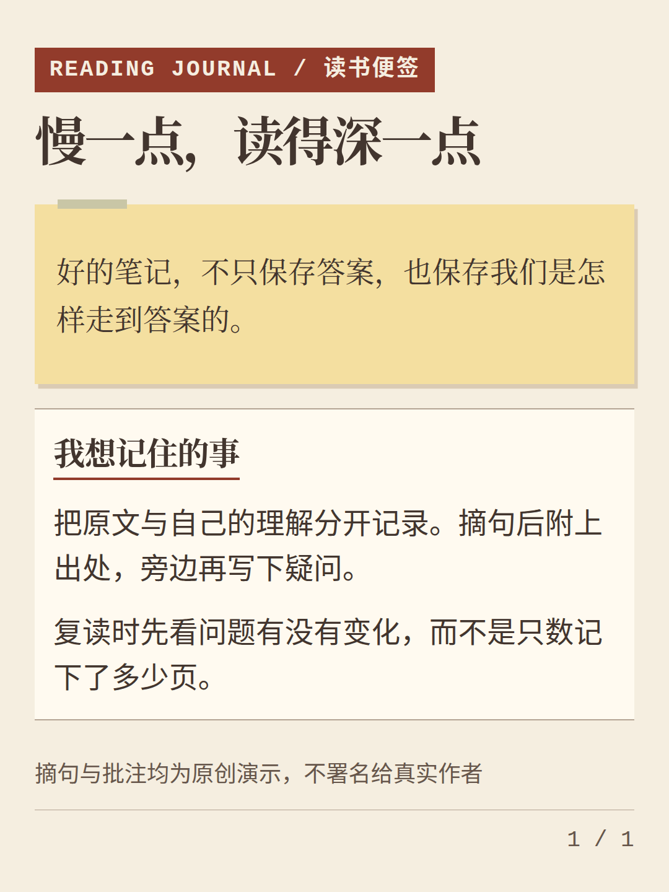
T25 · 温暖手账 已验收示例
便签式阅读摘记 阅读笔记、摘句与思考
无需图片 · standard · v2
原始 PNG，未裁切；缩略图不是手机阅读验收。
T25 完整 Markdown 输入 · 原始 PNG · 定位此模板
结构、边界与复现 · T25
输入结构 一个 H1；引用块；一个 H2 下的阅读思考。
不适用 / 限制 密集数据、长篇引用；保留完整引文并增加手动卡片。
推荐内容量 70–170 字，仅为选型参考，不保证放得下。
版本 / 构图 v2 · reading-note · explainer
注册示例 standard 密度 · mobile 阅读预设 · 3:4 · manual
源码支持画幅 portrait；支持不等于已验收。仅在 6 个模板上增加 8 个额外画幅组合：T04/T21 各增 square 与 slide，T05/T13 仅增 square，T24/T37 仅增 slide。当前预览仅绑定上面的精确 standard / 3:4 示例。八个指定短例已通过独立证据注册表绑定，相关输入、完整图、手机图和PDF见本条详情；T04/T21四组合为aspect-v2并保留v1 历史证据，T05/T13/T24/T37四组合为aspect-v1。其他内容仍须实测，见画幅说明。
其他密度 compact / standard / editorial 仅改变间距，不缩小字体。当前真实预览只证明 standard 注册示例；历史图只证明对应旧版，均不代替其他密度验收。
设计来源 Original md2card-skill composition, MIT
文字来源 Original demonstration text; not an attributed external quotation
素材来源 No external assets; local system fonts only
当前示例 SHA-256 70e7122d3a4089f2233b790548cf26bc244624d01cef7e44544fc26aaf924ae1
已验收 PNG SHA-256 09e497c19e8e2a37700b8c9b92ca7c8fabb378887d8cc391d4f79c2f65077b77
证据文件 SHA-256 48e838a2e5799b1f75fb99f6286fb0dde4aa03343ca554a069d5f1b9534379a3 在仓库根目录复现同一输入（需允许的 Chromium、中文字体与 Poppler 环境）：
node scripts/render.mjs examples/templates/T25.md --out output/T25 --size portrait --paginate manual --format all --strict --preview输出目录必须为空或不存在。命令使用当前代码；要复现历史截图，还需匹配记录中的代码、字体与环境。这里不执行渲染。
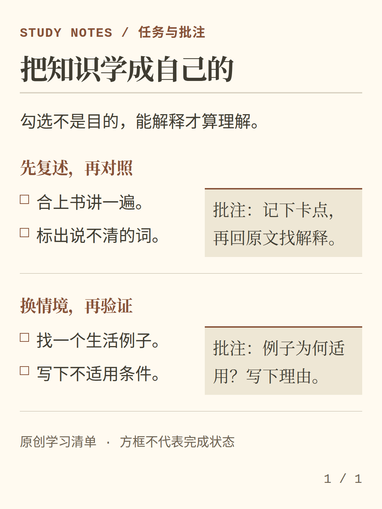
T26 · 温暖手账 已验收示例
批注式学习清单 学习任务、复习清单与对应批注
无需图片 · standard · v3
原始 PNG，未裁切；缩略图不是手机阅读验收。
T26 完整 Markdown 输入 · 原始 PNG · 定位此模板
结构、边界与复现 · T26
输入结构 一个 H1；一句导语；两个 H2，每节包含两项简短无序清单及一个批注引用块。空方框是项目符号，不代表已完成。
不适用 / 限制 长嵌套任务、需要交互勾选或批注大于正文的内容；可改用普通 steps 或 explainer 分页。
推荐内容量 80–150 字，仅为选型参考，不保证放得下。
版本 / 构图 v3 · annotated-study-checklist · steps
注册示例 standard 密度 · mobile 阅读预设 · 3:4 · manual
源码支持画幅 portrait；支持不等于已验收。仅在 6 个模板上增加 8 个额外画幅组合：T04/T21 各增 square 与 slide，T05/T13 仅增 square，T24/T37 仅增 slide。当前预览仅绑定上面的精确 standard / 3:4 示例。八个指定短例已通过独立证据注册表绑定，相关输入、完整图、手机图和PDF见本条详情；T04/T21四组合为aspect-v2并保留v1 历史证据，T05/T13/T24/T37四组合为aspect-v1。其他内容仍须实测，见画幅说明。
其他密度 compact / standard / editorial 仅改变间距，不缩小字体。当前真实预览只证明 standard 注册示例；历史图只证明对应旧版，均不代替其他密度验收。
设计来源 Original md2card-skill composition, MIT
文字来源 Original demonstration text; not an attributed external quotation
素材来源 No external assets; local system fonts only
当前示例 SHA-256 ba68d129d10d4391da1eecd3841e23f8ef64374c5eb846d76426900ef62e5dba
已验收 PNG SHA-256 4422437bfdcb21d87ed85554f78433fdf7fa8ddd0ff54a1d98d275d63ef81904
证据文件 SHA-256 c5c510c524fed2aa3471caf0fc5e15f097b741cccf254ac05e8cb85ce8cae392 在仓库根目录复现同一输入（需允许的 Chromium、中文字体与 Poppler 环境）：
node scripts/render.mjs examples/templates/T26.md --out output/T26 --size portrait --paginate manual --format all --strict --preview输出目录必须为空或不存在。命令使用当前代码；要复现历史截图，还需匹配记录中的代码、字体与环境。这里不执行渲染。
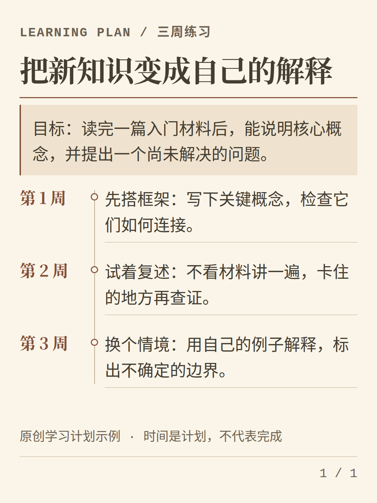
T27 · 温暖手账 已验收示例
时间线学习计划 按阶段整理学习目标、练习与检验方式
无需图片 · standard · v2
原始 PNG，未裁切；缩略图不是手机阅读验收。
T27 完整 Markdown 输入 · 原始 PNG · 定位此模板
结构、边界与复现 · T27
输入结构 一个 H1；导语写总目标；三个 H2 使用作者提供的短时间标签，如第 1 周；各自一个段落写任务与检验。时间不由模板生成。
不适用 / 限制 精确排程、交互进度、多层子任务或过长日期；请转用日历或普通 steps，不把计划显示成已完成。
推荐内容量 80–150 字，仅为选型参考，不保证放得下。
版本 / 构图 v2 · dated-study-timeline · steps
注册示例 standard 密度 · mobile 阅读预设 · 3:4 · manual
源码支持画幅 portrait；支持不等于已验收。仅在 6 个模板上增加 8 个额外画幅组合：T04/T21 各增 square 与 slide，T05/T13 仅增 square，T24/T37 仅增 slide。当前预览仅绑定上面的精确 standard / 3:4 示例。八个指定短例已通过独立证据注册表绑定，相关输入、完整图、手机图和PDF见本条详情；T04/T21四组合为aspect-v2并保留v1 历史证据，T05/T13/T24/T37四组合为aspect-v1。其他内容仍须实测，见画幅说明。
其他密度 compact / standard / editorial 仅改变间距，不缩小字体。当前真实预览只证明 standard 注册示例；历史图只证明对应旧版，均不代替其他密度验收。
设计来源 Original md2card-skill composition, MIT
文字来源 Original demonstration text; not an attributed external quotation
素材来源 No external assets; local system fonts only
当前示例 SHA-256 558e0eccd9f7e38475d254a9a622a178b6afda1097f25a8dfbcb3622f1164a4f
已验收 PNG SHA-256 6c1f77df3168cb17ecaf7644d274cf95ee66d781ef3bda265480f68b1c6c0661
证据文件 SHA-256 48e838a2e5799b1f75fb99f6286fb0dde4aa03343ca554a069d5f1b9534379a3 在仓库根目录复现同一输入（需允许的 Chromium、中文字体与 Poppler 环境）：
node scripts/render.mjs examples/templates/T27.md --out output/T27 --size portrait --paginate manual --format all --strict --preview输出目录必须为空或不存在。命令使用当前代码；要复现历史截图，还需匹配记录中的代码、字体与环境。这里不执行渲染。
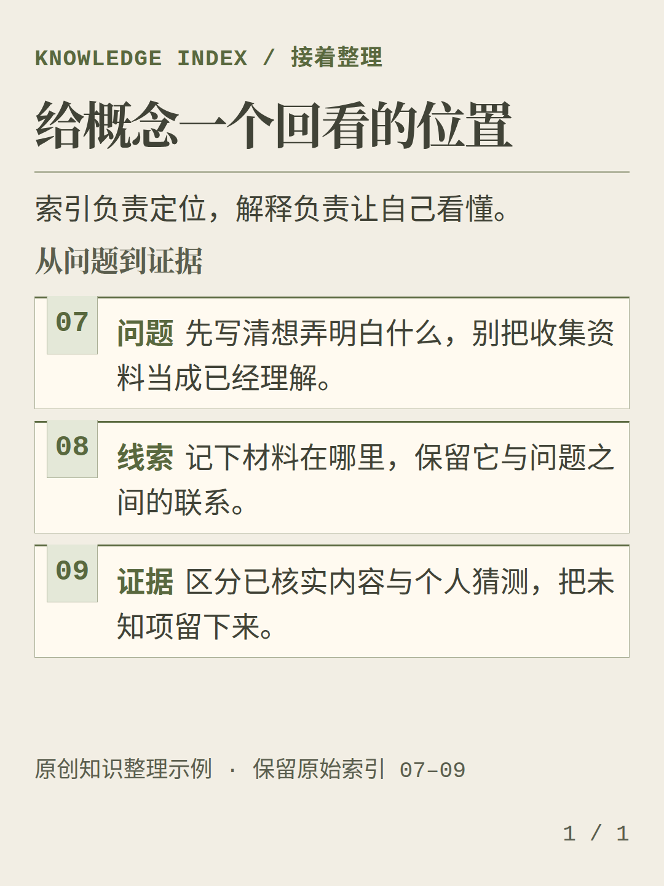
T28 · 温暖手账 已验收示例
索引卡知识整理 用稳定索引整理概念、定义与回看线索
无需图片 · standard · v2
原始 PNG，未裁切；缩略图不是手机阅读验收。
T28 完整 Markdown 输入 · 原始 PNG · 定位此模板
结构、边界与复现 · T28
输入结构 一个 H1；短导语；一个 H2 下放三个有序列表项，每项以加粗概念开头，再写解释。编号来自原始列表；固定索引签仅支持 0–99。
不适用 / 限制 超过 99 的编号、长嵌套列表或多段长定义；改用普通 steps 或分卡，保留原始编号，不重置为 1。
推荐内容量 80–150 字，仅为选型参考，不保证放得下。
版本 / 构图 v2 · numbered-index-slips · steps
注册示例 standard 密度 · mobile 阅读预设 · 3:4 · manual
源码支持画幅 portrait；支持不等于已验收。仅在 6 个模板上增加 8 个额外画幅组合：T04/T21 各增 square 与 slide，T05/T13 仅增 square，T24/T37 仅增 slide。当前预览仅绑定上面的精确 standard / 3:4 示例。八个指定短例已通过独立证据注册表绑定，相关输入、完整图、手机图和PDF见本条详情；T04/T21四组合为aspect-v2并保留v1 历史证据，T05/T13/T24/T37四组合为aspect-v1。其他内容仍须实测，见画幅说明。
其他密度 compact / standard / editorial 仅改变间距，不缩小字体。当前真实预览只证明 standard 注册示例；历史图只证明对应旧版，均不代替其他密度验收。
设计来源 Original md2card-skill composition, MIT
文字来源 Original demonstration text; not an attributed external quotation
素材来源 No external assets; local system fonts only
当前示例 SHA-256 f21aad7532018e933214db6ea1e17740d899551e0023b6b6242ebd200344534d
已验收 PNG SHA-256 27a97cc1f218262fdc25557eb28a0dd98bcdf2baf71bad0ca5b6e6c43c0c96a6
证据文件 SHA-256 48e838a2e5799b1f75fb99f6286fb0dde4aa03343ca554a069d5f1b9534379a3 在仓库根目录复现同一输入（需允许的 Chromium、中文字体与 Poppler 环境）：
node scripts/render.mjs examples/templates/T28.md --out output/T28 --size portrait --paginate manual --format all --strict --preview输出目录必须为空或不存在。命令使用当前代码；要复现历史截图，还需匹配记录中的代码、字体与环境。这里不执行渲染。
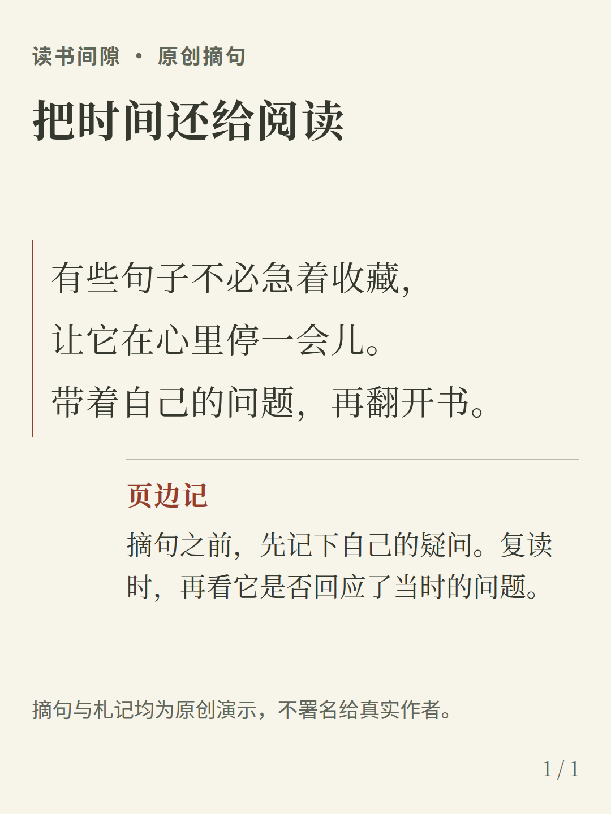
T29 · 东方书卷 已验收示例
题签留白书摘 短书摘、原创语句与独立阅读理解
无需图片 · standard · v2
原始 PNG，未裁切；缩略图不是手机阅读验收。
T29 完整 Markdown 输入 · 原始 PNG · 定位此模板
结构、边界与复现 · T29
输入结构 一个短 H1；保留原始断句的引用块；一个 H2 下放个人理解；source 记录真实出处或原创身份。
不适用 / 限制 长篇节选、无法核对的名人语录和多级列表；不改句意、不虚构署名、不强制竖排。
推荐内容量 70–150 字，仅为选型参考，不保证放得下。
版本 / 构图 v2 · title-label-quotation · quote
注册示例 standard 密度 · mobile 阅读预设 · 3:4 · manual
源码支持画幅 portrait；支持不等于已验收。仅在 6 个模板上增加 8 个额外画幅组合：T04/T21 各增 square 与 slide，T05/T13 仅增 square，T24/T37 仅增 slide。当前预览仅绑定上面的精确 standard / 3:4 示例。八个指定短例已通过独立证据注册表绑定，相关输入、完整图、手机图和PDF见本条详情；T04/T21四组合为aspect-v2并保留v1 历史证据，T05/T13/T24/T37四组合为aspect-v1。其他内容仍须实测，见画幅说明。
其他密度 compact / standard / editorial 仅改变间距，不缩小字体。当前真实预览只证明 standard 注册示例；历史图只证明对应旧版，均不代替其他密度验收。
设计来源 Original md2card-skill composition, MIT
文字来源 Original demonstration text; not an attributed external quotation
素材来源 No external assets; local system fonts only
当前示例 SHA-256 7970b1a873fca64027899b99fb9fb13206339e0f64620962c2ec915d1a0385b8
已验收 PNG SHA-256 b0a44bd09245b94844f091ae3761ae58792f90aff6130ecc5acce310f1a67508
证据文件 SHA-256 48e838a2e5799b1f75fb99f6286fb0dde4aa03343ca554a069d5f1b9534379a3 在仓库根目录复现同一输入（需允许的 Chromium、中文字体与 Poppler 环境）：
node scripts/render.mjs examples/templates/T29.md --out output/T29 --size portrait --paginate manual --format all --strict --preview输出目录必须为空或不存在。命令使用当前代码；要复现历史截图，还需匹配记录中的代码、字体与环境。这里不执行渲染。
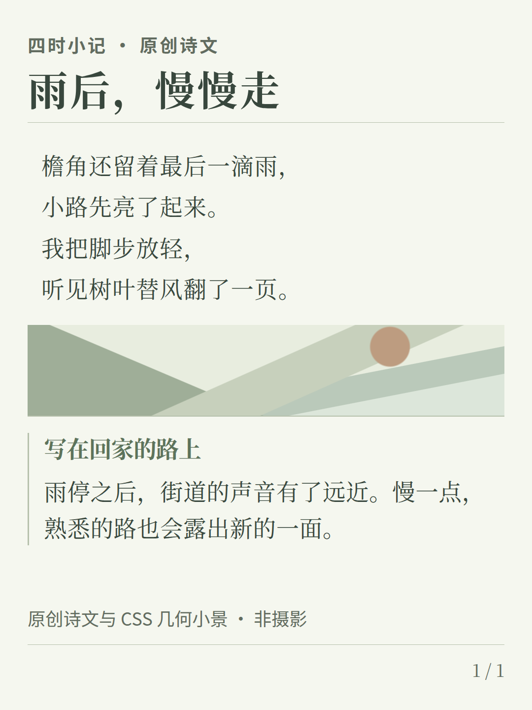
T30 · 东方书卷 已验收示例
横排诗文与小景 短诗、散文片段与安静的创作札记
无需图片 · standard · v2
原始 PNG，未裁切；缩略图不是手机阅读验收。
T30 完整 Markdown 输入 · 原始 PNG · 定位此模板
结构、边界与复现 · T30
输入结构 一个 H1；引用块放四至六行横排诗文，并用 Markdown 硬换行保留行分隔；一个 H2 放札记；小景为模板自带原创 CSS 几何构图。
不适用 / 限制 长诗、要求原作插图或真实摄影的图文；请另选图文模板，不把几何小景当作照片。
推荐内容量 60–130 字，仅为选型参考，不保证放得下。
版本 / 构图 v2 · horizontal-poem-small-scenery · quote
注册示例 standard 密度 · mobile 阅读预设 · 3:4 · manual
源码支持画幅 portrait；支持不等于已验收。仅在 6 个模板上增加 8 个额外画幅组合：T04/T21 各增 square 与 slide，T05/T13 仅增 square，T24/T37 仅增 slide。当前预览仅绑定上面的精确 standard / 3:4 示例。八个指定短例已通过独立证据注册表绑定，相关输入、完整图、手机图和PDF见本条详情；T04/T21四组合为aspect-v2并保留v1 历史证据，T05/T13/T24/T37四组合为aspect-v1。其他内容仍须实测，见画幅说明。
其他密度 compact / standard / editorial 仅改变间距，不缩小字体。当前真实预览只证明 standard 注册示例；历史图只证明对应旧版，均不代替其他密度验收。
设计来源 Original md2card-skill composition, MIT
文字来源 Original demonstration text; not an attributed external quotation
素材来源 No external assets; local system fonts only
当前示例 SHA-256 2017c9fc2ea9f612c6ac4fcd43c4dcb67ac75a107d45f6643777589218acf3e6
已验收 PNG SHA-256 37454dcd902601329676863b12a1f2a5e7a3ba4abab93c56454c6577dc8f378e
证据文件 SHA-256 48e838a2e5799b1f75fb99f6286fb0dde4aa03343ca554a069d5f1b9534379a3 在仓库根目录复现同一输入（需允许的 Chromium、中文字体与 Poppler 环境）：
node scripts/render.mjs examples/templates/T30.md --out output/T30 --size portrait --paginate manual --format all --strict --preview输出目录必须为空或不存在。命令使用当前代码；要复现历史截图，还需匹配记录中的代码、字体与环境。这里不执行渲染。
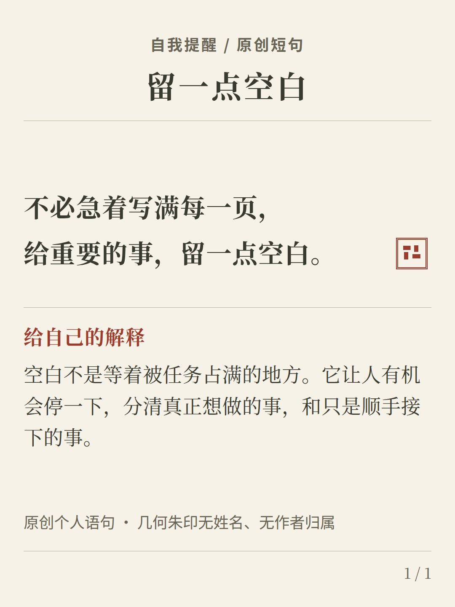
T31 · 东方书卷 已验收示例
印章式个人语录 呈现个人短句、真实人物原话与独立思考
无需图片 · standard · v2
原始 PNG，未裁切；缩略图不是手机阅读验收。
T31 完整 Markdown 输入 · 原始 PNG · 定位此模板
结构、边界与复现 · T31
输入结构 一个短 H1；引用块保留原始断句；一个 H2 下写个人理解。source 只记真实出处或原创身份；朱印仅为空白几何装饰，不生成作者姓名。
不适用 / 限制 无法核实的人物语录、长篇书摘或要求真实印鉴的内容；不虚构作者、印文或归属，必要时使用普通 quote。
推荐内容量 55–120 字，仅为选型参考，不保证放得下。
版本 / 构图 v2 · personal-quotation-geometric-seal · quote
注册示例 standard 密度 · mobile 阅读预设 · 3:4 · manual
源码支持画幅 portrait；支持不等于已验收。仅在 6 个模板上增加 8 个额外画幅组合：T04/T21 各增 square 与 slide，T05/T13 仅增 square，T24/T37 仅增 slide。当前预览仅绑定上面的精确 standard / 3:4 示例。八个指定短例已通过独立证据注册表绑定，相关输入、完整图、手机图和PDF见本条详情；T04/T21四组合为aspect-v2并保留v1 历史证据，T05/T13/T24/T37四组合为aspect-v1。其他内容仍须实测，见画幅说明。
其他密度 compact / standard / editorial 仅改变间距，不缩小字体。当前真实预览只证明 standard 注册示例；历史图只证明对应旧版，均不代替其他密度验收。
设计来源 Original md2card-skill composition, MIT
文字来源 Original demonstration text; not an attributed external quotation
素材来源 No external assets; local system fonts only
当前示例 SHA-256 10c958c6615a0c052f45830e8b577bfc723e39e360e448179ba54103587733d5
已验收 PNG SHA-256 7f0977f0bd23ab13f1f8639cb58e60cbef82bb5c0fb93b573644a2b00a0dc9a8
证据文件 SHA-256 48e838a2e5799b1f75fb99f6286fb0dde4aa03343ca554a069d5f1b9534379a3 在仓库根目录复现同一输入（需允许的 Chromium、中文字体与 Poppler 环境）：
node scripts/render.mjs examples/templates/T31.md --out output/T31 --size portrait --paginate manual --format all --strict --preview输出目录必须为空或不存在。命令使用当前代码；要复现历史截图，还需匹配记录中的代码、字体与环境。这里不执行渲染。
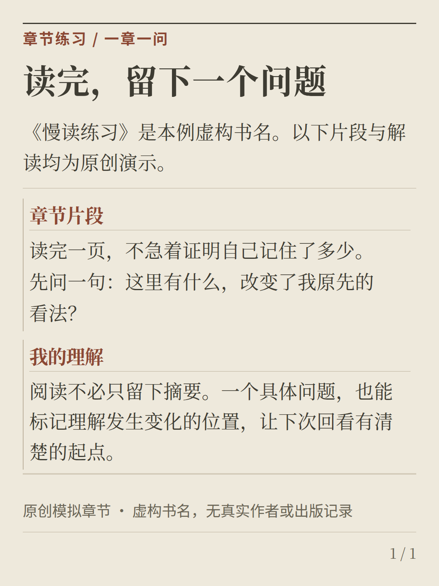
T32 · 东方书卷 已验收示例
书页章节解读 区分章节摘句与读者解读，保留作品来源
无需图片 · standard · v3
原始 PNG，未裁切；缩略图不是手机阅读验收。
T32 完整 Markdown 输入 · 原始 PNG · 定位此模板
结构、边界与复现 · T32
输入结构 一个 H1；导语交代章节语境；两个 H2 分别放短引用块与个人理解，形成前后成对的全宽阅读带。引用与解读不能互相冒充。
不适用 / 限制 整章复制、长篇节选、窄栏长代码与不明出处文本；使用获授权的短摘句，或明确原创演示并手动分卡。
推荐内容量 90–170 字，仅为选型参考，不保证放得下。
版本 / 构图 v3 · chapter-excerpt-reading-bands · explainer
注册示例 standard 密度 · mobile 阅读预设 · 3:4 · manual
源码支持画幅 portrait；支持不等于已验收。仅在 6 个模板上增加 8 个额外画幅组合：T04/T21 各增 square 与 slide，T05/T13 仅增 square，T24/T37 仅增 slide。当前预览仅绑定上面的精确 standard / 3:4 示例。八个指定短例已通过独立证据注册表绑定，相关输入、完整图、手机图和PDF见本条详情；T04/T21四组合为aspect-v2并保留v1 历史证据，T05/T13/T24/T37四组合为aspect-v1。其他内容仍须实测，见画幅说明。
其他密度 compact / standard / editorial 仅改变间距，不缩小字体。当前真实预览只证明 standard 注册示例；历史图只证明对应旧版，均不代替其他密度验收。
设计来源 Original md2card-skill composition, MIT
文字来源 Original demonstration text; not an attributed external quotation
素材来源 No external assets; local system fonts only
当前示例 SHA-256 afcb8f7815c2ad2e3335287631af536de010abcd08bbeac327003f9f8f3586a6
已验收 PNG SHA-256 29c9775f41db9efcaeb7a8155da26319110c5eacf43d75e7f3c3faa12fd472bb
证据文件 SHA-256 c5c510c524fed2aa3471caf0fc5e15f097b741cccf254ac05e8cb85ce8cae392 在仓库根目录复现同一输入（需允许的 Chromium、中文字体与 Poppler 环境）：
node scripts/render.mjs examples/templates/T32.md --out output/T32 --size portrait --paginate manual --format all --strict --preview输出目录必须为空或不存在。命令使用当前代码；要复现历史截图，还需匹配记录中的代码、字体与环境。这里不执行渲染。
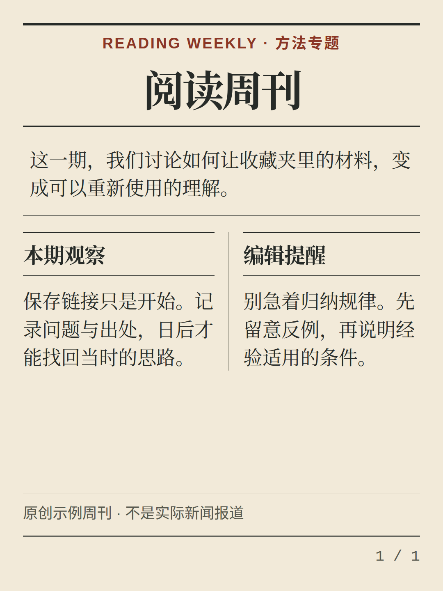
T33 · 复古报刊 已验收示例
报头式主题导读 专题导读、读书周刊
无需图片 · standard · v2
原始 PNG，未裁切；缩略图不是手机阅读验收。
T33 完整 Markdown 输入 · 原始 PNG · 定位此模板
结构、边界与复现 · T33
输入结构 一个 H1 报头；一段导语；两个 H2 栏目。
不适用 / 限制 密集长文与多列表格；用普通解释卡分页。
推荐内容量 80–170 字，仅为选型参考，不保证放得下。
版本 / 构图 v2 · newspaper-masthead · cover
注册示例 standard 密度 · mobile 阅读预设 · 3:4 · manual
源码支持画幅 portrait；支持不等于已验收。仅在 6 个模板上增加 8 个额外画幅组合：T04/T21 各增 square 与 slide，T05/T13 仅增 square，T24/T37 仅增 slide。当前预览仅绑定上面的精确 standard / 3:4 示例。八个指定短例已通过独立证据注册表绑定，相关输入、完整图、手机图和PDF见本条详情；T04/T21四组合为aspect-v2并保留v1 历史证据，T05/T13/T24/T37四组合为aspect-v1。其他内容仍须实测，见画幅说明。
其他密度 compact / standard / editorial 仅改变间距，不缩小字体。当前真实预览只证明 standard 注册示例；历史图只证明对应旧版，均不代替其他密度验收。
设计来源 Original md2card-skill composition, MIT
文字来源 Original demonstration text; not an attributed external quotation
素材来源 No external assets; local system fonts only
当前示例 SHA-256 f806181a5d8264fced4ea19f275bc52eaeecb39b87f4705a5c5cea79cfe8d53a
已验收 PNG SHA-256 6311f6f041ab1fa8fbbc933b6467dba3ab20b94d53864f5cbad877699fb4ed03
证据文件 SHA-256 48e838a2e5799b1f75fb99f6286fb0dde4aa03343ca554a069d5f1b9534379a3 在仓库根目录复现同一输入（需允许的 Chromium、中文字体与 Poppler 环境）：
node scripts/render.mjs examples/templates/T33.md --out output/T33 --size portrait --paginate manual --format all --strict --preview输出目录必须为空或不存在。命令使用当前代码；要复现历史截图，还需匹配记录中的代码、字体与环境。这里不执行渲染。
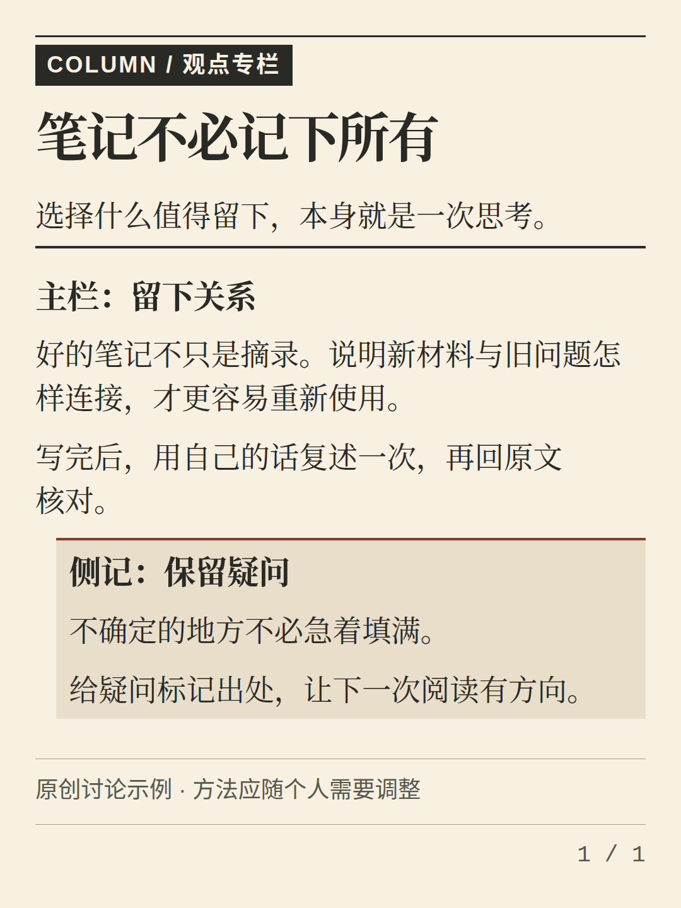
T34 · 复古报刊 已验收示例
专栏式观点分析 观点分析与方法讨论
无需图片 · standard · v3
原始 PNG，未裁切；缩略图不是手机阅读验收。
T34 完整 Markdown 输入 · 原始 PNG · 定位此模板
结构、边界与复现 · T34
输入结构 一个 H1；短导语；两个 H2，分别为全宽主栏与缩进侧记。
不适用 / 限制 长引文与复杂嵌套；保留原文手动分卡。
推荐内容量 90–170 字，仅为选型参考，不保证放得下。
版本 / 构图 v3 · column-analysis · explainer
注册示例 standard 密度 · mobile 阅读预设 · 3:4 · manual
源码支持画幅 portrait；支持不等于已验收。仅在 6 个模板上增加 8 个额外画幅组合：T04/T21 各增 square 与 slide，T05/T13 仅增 square，T24/T37 仅增 slide。当前预览仅绑定上面的精确 standard / 3:4 示例。八个指定短例已通过独立证据注册表绑定，相关输入、完整图、手机图和PDF见本条详情；T04/T21四组合为aspect-v2并保留v1 历史证据，T05/T13/T24/T37四组合为aspect-v1。其他内容仍须实测，见画幅说明。
其他密度 compact / standard / editorial 仅改变间距，不缩小字体。当前真实预览只证明 standard 注册示例；历史图只证明对应旧版，均不代替其他密度验收。
设计来源 Original md2card-skill composition, MIT
文字来源 Original demonstration text; not an attributed external quotation
素材来源 No external assets; local system fonts only
当前示例 SHA-256 e4fa1c47103570e639417c330c420af3ac8734b7a736b1fd42d123c2a3936ece
已验收 PNG SHA-256 4b6ebfec04af21de5a1ae2a09a3e5ad24cbcfc725a901548e80baf98faaca18e
证据文件 SHA-256 c5c510c524fed2aa3471caf0fc5e15f097b741cccf254ac05e8cb85ce8cae392 在仓库根目录复现同一输入（需允许的 Chromium、中文字体与 Poppler 环境）：
node scripts/render.mjs examples/templates/T34.md --out output/T34 --size portrait --paginate manual --format all --strict --preview输出目录必须为空或不存在。命令使用当前代码；要复现历史截图，还需匹配记录中的代码、字体与环境。这里不执行渲染。
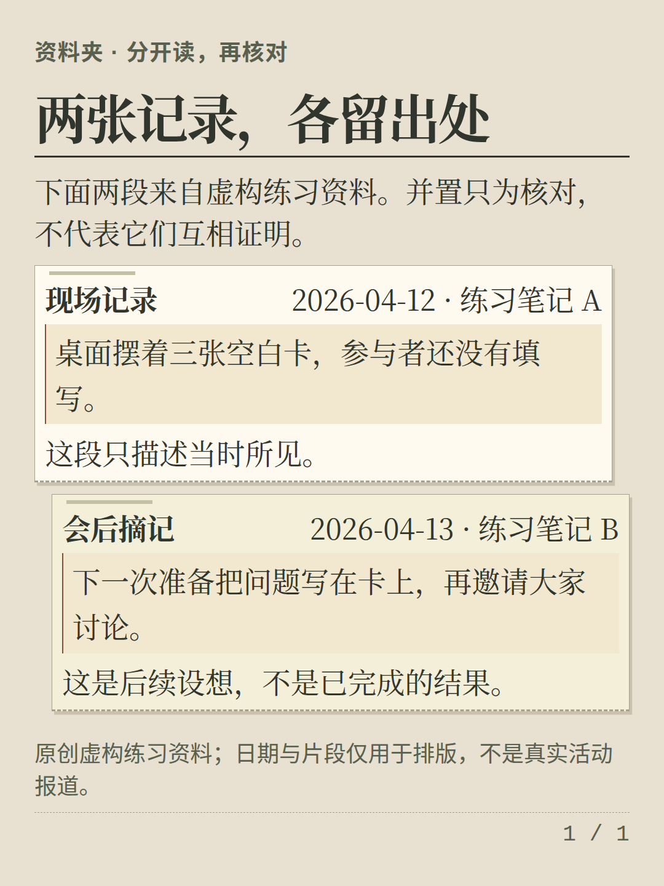
T35 · 复古报刊 已验收示例
剪报拼贴资料卡 并列保存资料片段、记录日期和各自出处
无需图片 · standard · v2
原始 PNG，未裁切；缩略图不是手机阅读验收。
T35 完整 Markdown 输入 · 原始 PNG · 定位此模板
结构、边界与复现 · T35
输入结构 一个 H1；短导语；两个 H2 资料片段，每节依次写明确日期/出处、引用块与必要边界。片段来源不得被省略或拼成新结论。
不适用 / 限制 未注明来源的摘句、需要暗示因果的拼贴或长篇全文；原文过长请手动分卡。
推荐内容量 100–190 字，仅为选型参考，不保证放得下。
版本 / 构图 v2 · dated-source-clipping-stack · explainer
注册示例 standard 密度 · mobile 阅读预设 · 3:4 · manual
源码支持画幅 portrait；支持不等于已验收。仅在 6 个模板上增加 8 个额外画幅组合：T04/T21 各增 square 与 slide，T05/T13 仅增 square，T24/T37 仅增 slide。当前预览仅绑定上面的精确 standard / 3:4 示例。八个指定短例已通过独立证据注册表绑定，相关输入、完整图、手机图和PDF见本条详情；T04/T21四组合为aspect-v2并保留v1 历史证据，T05/T13/T24/T37四组合为aspect-v1。其他内容仍须实测，见画幅说明。
其他密度 compact / standard / editorial 仅改变间距，不缩小字体。当前真实预览只证明 standard 注册示例；历史图只证明对应旧版，均不代替其他密度验收。
设计来源 Original md2card-skill composition, MIT
文字来源 Original explicitly fictional source fragments and dates; not actual event reporting.
素材来源 No picture assets; local system fonts only.
当前示例 SHA-256 22162a975a4d53a330a7aae60651c600de2a30ad70ed8d15de99c54bd149c877
已验收 PNG SHA-256 a584ab78790a8ee70d23bc099c135f8bbad6537c8a6c1d82627f7b5eee8a08a8
证据文件 SHA-256 48e838a2e5799b1f75fb99f6286fb0dde4aa03343ca554a069d5f1b9534379a3 在仓库根目录复现同一输入（需允许的 Chromium、中文字体与 Poppler 环境）：
node scripts/render.mjs examples/templates/T35.md --out output/T35 --size portrait --paginate manual --format all --strict --preview输出目录必须为空或不存在。命令使用当前代码；要复现历史截图，还需匹配记录中的代码、字体与环境。这里不执行渲染。
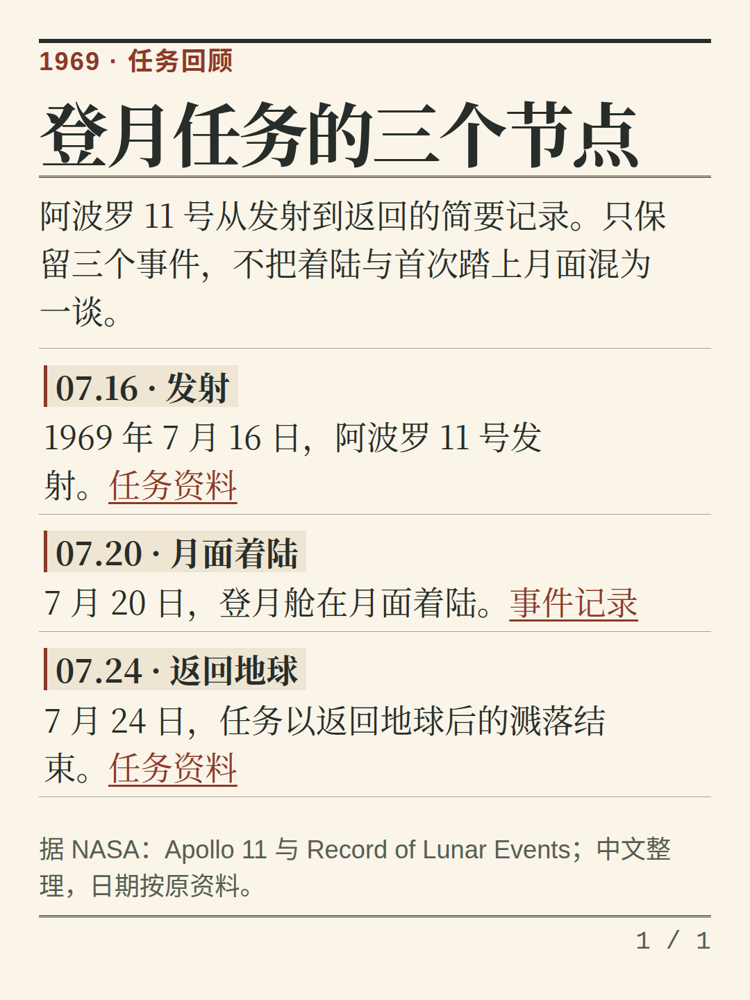
T36 · 复古报刊 已验收示例
大标题事件回顾 用大标题、真实日期和连续事实记录回顾事件
无需图片 · standard · v2
原始 PNG，未裁切；缩略图不是手机阅读验收。
T36 完整 Markdown 输入 · 原始 PNG · 定位此模板
结构、边界与复现 · T36
输入结构 一个 H1 事件标题；导语说明范围；三个 H2 包含作者提供的日期与事件名称；各节保留事实及资料链接。模板不生成日期或事实。
不适用 / 限制 没有来源的事件结论、跨时区却不注明口径的精确时间、宣传口号；不把未验证消息当事实。
推荐内容量 100–180 字，仅为选型参考，不保证放得下。
版本 / 构图 v2 · headline-event-record · explainer
注册示例 standard 密度 · mobile 阅读预设 · 3:4 · manual
源码支持画幅 portrait；支持不等于已验收。仅在 6 个模板上增加 8 个额外画幅组合：T04/T21 各增 square 与 slide，T05/T13 仅增 square，T24/T37 仅增 slide。当前预览仅绑定上面的精确 standard / 3:4 示例。八个指定短例已通过独立证据注册表绑定，相关输入、完整图、手机图和PDF见本条详情；T04/T21四组合为aspect-v2并保留v1 历史证据，T05/T13/T24/T37四组合为aspect-v1。其他内容仍须实测，见画幅说明。
其他密度 compact / standard / editorial 仅改变间距，不缩小字体。当前真实预览只证明 standard 注册示例；历史图只证明对应旧版，均不代替其他密度验收。
设计来源 Original md2card-skill composition, MIT
文字来源 Original Chinese paraphrase of NASA Apollo 11 mission and lunar-event records; verified URLs in docs/template-source-references.json.
素材来源 No picture assets; local system fonts only.
当前示例 SHA-256 bb1133ffeb3d94641520db65d9574888539ddfe7c8d1ecef81b1310e7fc45d93
已验收 PNG SHA-256 e2a0474961a4c0ef8ecfa9015abdff2a1286690a38755d8124f82aec44fae077
证据文件 SHA-256 48e838a2e5799b1f75fb99f6286fb0dde4aa03343ca554a069d5f1b9534379a3 在仓库根目录复现同一输入（需允许的 Chromium、中文字体与 Poppler 环境）：
node scripts/render.mjs examples/templates/T36.md --out output/T36 --size portrait --paginate manual --format all --strict --preview输出目录必须为空或不存在。命令使用当前代码；要复现历史截图，还需匹配记录中的代码、字体与环境。这里不执行渲染。
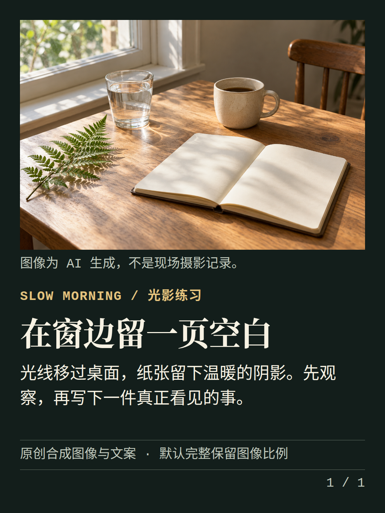
T37 · 胶片摄影 已验收示例
大图与底部信息带 影像记录、照片与短故事
必需本地图片 · standard · v2
原始 PNG，未裁切；缩略图不是手机阅读验收。
T37 完整 Markdown 输入 · 原始 PNG · 定位此模板
结构、边界与复现 · T37
输入结构 元数据 image 为主要照片；一个 H1；简短故事；caption 和 source 说明图像性质与来源。
不适用 / 限制 以大量文字为主的内容；用图文分栏或普通解释卡。
推荐内容量 35–95 字，仅为选型参考，不保证放得下。
版本 / 构图 v2 · film-hero-band · image-caption
注册示例 standard 密度 · mobile 阅读预设 · 3:4 · manual
源码支持画幅 portrait / slide；支持不等于已验收。仅在 6 个模板上增加 8 个额外画幅组合：T04/T21 各增 square 与 slide，T05/T13 仅增 square，T24/T37 仅增 slide。当前预览仅绑定上面的精确 standard / 3:4 示例。八个指定短例已通过独立证据注册表绑定，相关输入、完整图、手机图和PDF见本条详情；T04/T21四组合为aspect-v2并保留v1 历史证据，T05/T13/T24/T37四组合为aspect-v1。其他内容仍须实测，见画幅说明。
其他密度 compact / standard / editorial 仅改变间距，不缩小字体。当前真实预览只证明 standard 注册示例；历史图只证明对应旧版，均不代替其他密度验收。
设计来源 Original md2card-skill composition, MIT
文字来源 Original demonstration text; not an attributed external quotation
素材来源 Original synthetic illustrations; fictional/AI identity disclosed in examples. See examples/templates/assets/provenance.json and README.md.
当前示例 SHA-256 10092106b880769b4bb0064bd3a1cd395193500eec941651e40496083f22887c
已验收 PNG SHA-256 52d3ad898c38d1c91040cafefd4dff3d398e572636f4b86c8f14424ef2f91767
证据文件 SHA-256 48e838a2e5799b1f75fb99f6286fb0dde4aa03343ca554a069d5f1b9534379a3 slide 精确短例 · aspect-v1 原始输入 · 完整 PNG · 375px · 390px · 原生 PDF · 独立画幅复核 在仓库根目录复现同一输入（需允许的 Chromium、中文字体与 Poppler 环境）：
node scripts/render.mjs examples/templates/T37.md --out output/T37 --size portrait --paginate manual --format all --strict --preview输出目录必须为空或不存在。命令使用当前代码；要复现历史截图，还需匹配记录中的代码、字体与环境。这里不执行渲染。
T38 · 胶片摄影 已验收示例
接触印样式记录 多图观察、过程记录
必需正文图片 · standard · v2
原始 PNG，未裁切；缩略图不是手机阅读验收。
T38 完整 Markdown 输入 · 原始 PNG · 定位此模板
结构、边界与复现 · T38
输入结构 一个 H1；两个 H2 图像记录，每节一个 Markdown 本地图片与一句说明。保持 DOM 读序。
不适用 / 限制 多于两幅的大型图集、长文；手动增加卡片，不隐藏图片。
推荐内容量 45–110 字，仅为选型参考，不保证放得下。
版本 / 构图 v2 · contact-print-record · image-caption
注册示例 standard 密度 · mobile 阅读预设 · 3:4 · manual
源码支持画幅 portrait；支持不等于已验收。仅在 6 个模板上增加 8 个额外画幅组合：T04/T21 各增 square 与 slide，T05/T13 仅增 square，T24/T37 仅增 slide。当前预览仅绑定上面的精确 standard / 3:4 示例。八个指定短例已通过独立证据注册表绑定，相关输入、完整图、手机图和PDF见本条详情；T04/T21四组合为aspect-v2并保留v1 历史证据，T05/T13/T24/T37四组合为aspect-v1。其他内容仍须实测，见画幅说明。
其他密度 compact / standard / editorial 仅改变间距，不缩小字体。当前真实预览只证明 standard 注册示例；历史图只证明对应旧版，均不代替其他密度验收。
设计来源 Original md2card-skill composition, MIT
文字来源 Original demonstration text; not an attributed external quotation
素材来源 Original synthetic illustrations; fictional/AI identity disclosed in examples. See examples/templates/assets/provenance.json and README.md.
当前示例 SHA-256 450b2d8cb523abb8e5811d8f04ce0c6aa89235f97b00caadf420e9035624bda0
已验收 PNG SHA-256 754fc36d95f1b605f955e50202e2e55207946fffd9d0424bdff7677f45bf7340
证据文件 SHA-256 48e838a2e5799b1f75fb99f6286fb0dde4aa03343ca554a069d5f1b9534379a3 在仓库根目录复现同一输入（需允许的 Chromium、中文字体与 Poppler 环境）：
node scripts/render.mjs examples/templates/T38.md --out output/T38 --size portrait --paginate manual --format all --strict --preview输出目录必须为空或不存在。命令使用当前代码；要复现历史截图，还需匹配记录中的代码、字体与环境。这里不执行渲染。
T39 · 胶片摄影 已验收示例
人像与侧栏故事 让完整人像成为主区，标题、故事与署名占据同一侧栏
必需本地图片 · standard · v3
原始 PNG，未裁切；缩略图不是手机阅读验收。
T39 完整 Markdown 输入 · 原始 PNG · 定位此模板
结构、边界与复现 · T39
输入结构 必需本地人像 image、真实 alt 和说明性质的 caption；一个短 H1；短导语与一至两个 H2。标题与正文共用较宽的右侧叙述栏，完整人像在左侧贯穿两区。
不适用 / 限制 无图人物报道、长传记、必须裁切才能成立的肖像；侧栏不是小字容器，保留主体或换图。
推荐内容量 55–110 字，仅为选型参考，不保证放得下。
版本 / 构图 v3 · portrait-field-story-sidebar · image-caption
注册示例 standard 密度 · mobile 阅读预设 · 3:4 · manual
源码支持画幅 portrait；支持不等于已验收。仅在 6 个模板上增加 8 个额外画幅组合：T04/T21 各增 square 与 slide，T05/T13 仅增 square，T24/T37 仅增 slide。当前预览仅绑定上面的精确 standard / 3:4 示例。八个指定短例已通过独立证据注册表绑定，相关输入、完整图、手机图和PDF见本条详情；T04/T21四组合为aspect-v2并保留v1 历史证据，T05/T13/T24/T37四组合为aspect-v1。其他内容仍须实测，见画幅说明。
其他密度 compact / standard / editorial 仅改变间距，不缩小字体。当前真实预览只证明 standard 注册示例；历史图只证明对应旧版，均不代替其他密度验收。
设计来源 Original md2card-skill composition, MIT
文字来源 Original explicitly fictional character story; not a real interview or biography.
素材来源 Original AI-generated fictional adult portrait, reused without alteration; exact original hash recorded in the integrated provenance. See examples/templates/assets/provenance.json and README.md.
当前示例 SHA-256 fa0dbafb2f37bff04dce529519cc38b34d3bf81555127d609d7d2484ab9af940
已验收 PNG SHA-256 0f227465e4efd7fc0d9281663ee361a65252da78b365374deb15a33a1de51ca3
证据文件 SHA-256 c5c510c524fed2aa3471caf0fc5e15f097b741cccf254ac05e8cb85ce8cae392 在仓库根目录复现同一输入（需允许的 Chromium、中文字体与 Poppler 环境）：
node scripts/render.mjs examples/templates/T39.md --out output/T39 --size portrait --paginate manual --format all --strict --preview输出目录必须为空或不存在。命令使用当前代码；要复现历史截图，还需匹配记录中的代码、字体与环境。这里不执行渲染。
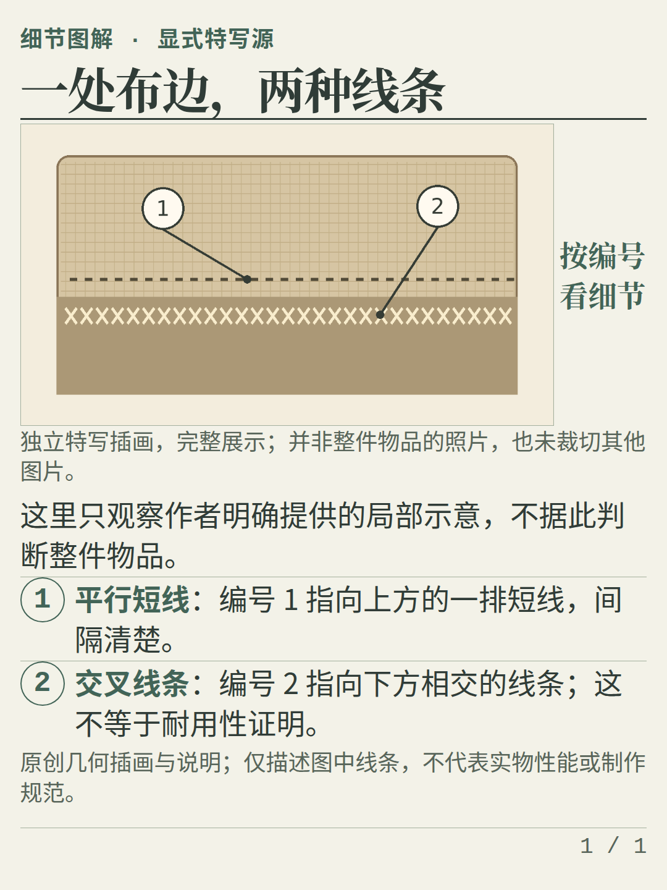
T40 · 胶片摄影 已验收示例
局部特写与知识注释 把明确选取的独立特写图与逐号注释对应
必需本地图片 · standard · v3
原始 PNG，未裁切；缩略图不是手机阅读验收。
T40 完整 Markdown 输入 · 原始 PNG · 定位此模板
结构、边界与复现 · T40
输入结构 image 必须是明确提供的特写图，caption 交代它是独立细节源或经用户授权的预裁切图；一个 H1；简短导语与两至三个有序注释。原生编号保留，固定编号签范围 0–99。
不适用 / 限制 未经授权裁切整图、把局部冒充全貌、图中编号与正文不匹配；当前模板不提供自动裁切。
推荐内容量 80–150 字，仅为选型参考，不保证放得下。
版本 / 构图 v3 · explicit-detail-numbered-key · image-caption
注册示例 standard 密度 · mobile 阅读预设 · 3:4 · manual
源码支持画幅 portrait；支持不等于已验收。仅在 6 个模板上增加 8 个额外画幅组合：T04/T21 各增 square 与 slide，T05/T13 仅增 square，T24/T37 仅增 slide。当前预览仅绑定上面的精确 standard / 3:4 示例。八个指定短例已通过独立证据注册表绑定，相关输入、完整图、手机图和PDF见本条详情；T04/T21四组合为aspect-v2并保留v1 历史证据，T05/T13/T24/T37四组合为aspect-v1。其他内容仍须实测，见画幅说明。
其他密度 compact / standard / editorial 仅改变间距，不缩小字体。当前真实预览只证明 standard 注册示例；历史图只证明对应旧版，均不代替其他密度验收。
设计来源 Original md2card-skill composition, MIT
文字来源 Original explanation limited to visible lines in the explicit detail illustration; no product-performance claim.
素材来源 Original code-native PNG illustrations; reproducible drawing source and SHA-256 provenance supplied. No third-party art or external fonts bundled. See examples/templates/assets/provenance.json and README.md.
当前示例 SHA-256 255a1463e49c46e5120be7feda683f45f30fb34fabd2efacbac2ba9eefce40e3
已验收 PNG SHA-256 9b1e790f691f033062e8d07dbee2ee3fca39e36cf9016f0d1d16c5749b596f6f
证据文件 SHA-256 c5c510c524fed2aa3471caf0fc5e15f097b741cccf254ac05e8cb85ce8cae392 在仓库根目录复现同一输入（需允许的 Chromium、中文字体与 Poppler 环境）：
node scripts/render.mjs examples/templates/T40.md --out output/T40 --size portrait --paginate manual --format all --strict --preview输出目录必须为空或不存在。命令使用当前代码；要复现历史截图，还需匹配记录中的代码、字体与环境。这里不执行渲染。
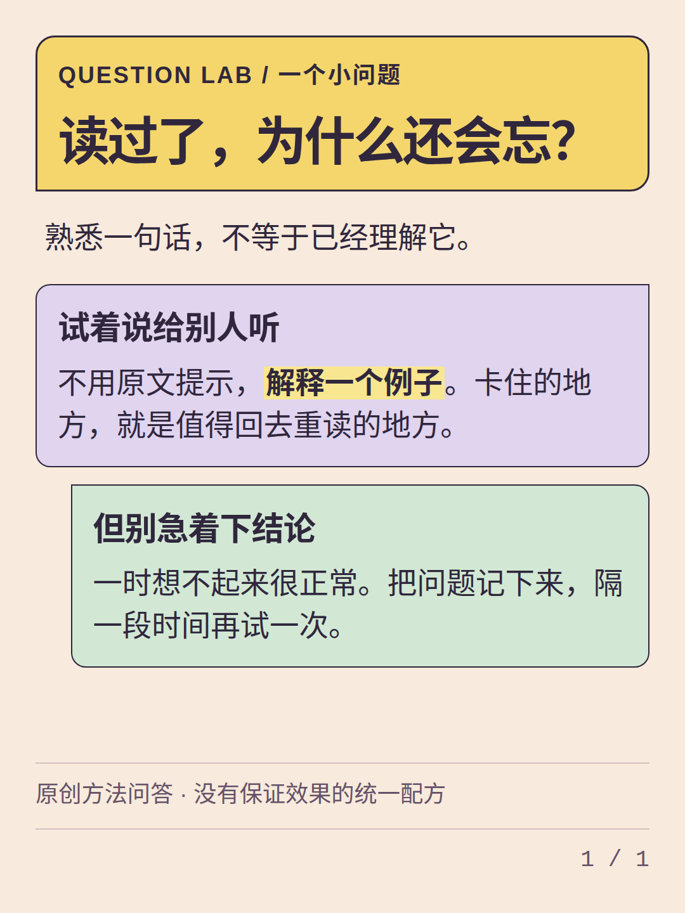
T41 · 糖果波普 已验收示例
色块问答 问题解释、概念问答
无需图片 · standard · v2
原始 PNG，未裁切；缩略图不是手机阅读验收。
T41 完整 Markdown 输入 · 原始 PNG · 定位此模板
结构、边界与复现 · T41
输入结构 H1 提出问题；导语说明背景；两个 H2 分别展开答案与边界。
不适用 / 限制 长表格、代码和多层论证；改用对应专用模板。
推荐内容量 70–160 字，仅为选型参考，不保证放得下。
版本 / 构图 v2 · color-block-question-answer · explainer
注册示例 standard 密度 · mobile 阅读预设 · 3:4 · manual
源码支持画幅 portrait；支持不等于已验收。仅在 6 个模板上增加 8 个额外画幅组合：T04/T21 各增 square 与 slide，T05/T13 仅增 square，T24/T37 仅增 slide。当前预览仅绑定上面的精确 standard / 3:4 示例。八个指定短例已通过独立证据注册表绑定，相关输入、完整图、手机图和PDF见本条详情；T04/T21四组合为aspect-v2并保留v1 历史证据，T05/T13/T24/T37四组合为aspect-v1。其他内容仍须实测，见画幅说明。
其他密度 compact / standard / editorial 仅改变间距，不缩小字体。当前真实预览只证明 standard 注册示例；历史图只证明对应旧版，均不代替其他密度验收。
设计来源 Original md2card-skill composition, MIT
文字来源 Original demonstration text; not an attributed external quotation
素材来源 No external assets; local system fonts only
当前示例 SHA-256 26177685689025638d3bd1f7bbb102444140ede2d95abafbc6a787b86dd53743
已验收 PNG SHA-256 d00199b561c8a070f99d48873b987bb96cb0897e0d4291b0b312a0062a060051
证据文件 SHA-256 48e838a2e5799b1f75fb99f6286fb0dde4aa03343ca554a069d5f1b9534379a3 在仓库根目录复现同一输入（需允许的 Chromium、中文字体与 Poppler 环境）：
node scripts/render.mjs examples/templates/T41.md --out output/T41 --size portrait --paginate manual --format all --strict --preview输出目录必须为空或不存在。命令使用当前代码；要复现历史截图，还需匹配记录中的代码、字体与环境。这里不执行渲染。
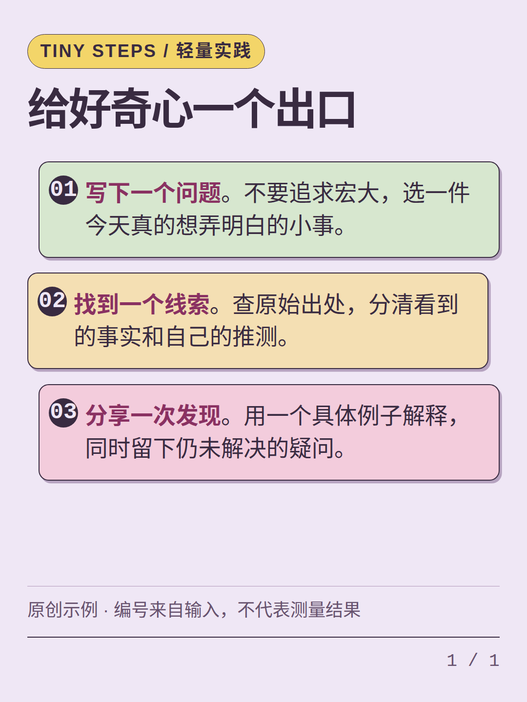
T42 · 糖果波普 已验收示例
贴纸式步骤卡 轻量教程、三步行动
无需图片 · standard · v2
原始 PNG，未裁切；缩略图不是手机阅读验收。
T42 完整 Markdown 输入 · 原始 PNG · 定位此模板
结构、边界与复现 · T42
输入结构 一个 H1；三个有序列表项；保留真实列表编号。 本模板支持原始编号 0–99，超出使用普通 steps。
不适用 / 限制 密集嵌套步骤或代码；用技术教程或普通 steps 分页。
推荐内容量 70–150 字，仅为选型参考，不保证放得下。
版本 / 构图 v2 · sticker-steps · steps
注册示例 standard 密度 · mobile 阅读预设 · 3:4 · manual
源码支持画幅 portrait；支持不等于已验收。仅在 6 个模板上增加 8 个额外画幅组合：T04/T21 各增 square 与 slide，T05/T13 仅增 square，T24/T37 仅增 slide。当前预览仅绑定上面的精确 standard / 3:4 示例。八个指定短例已通过独立证据注册表绑定，相关输入、完整图、手机图和PDF见本条详情；T04/T21四组合为aspect-v2并保留v1 历史证据，T05/T13/T24/T37四组合为aspect-v1。其他内容仍须实测，见画幅说明。
其他密度 compact / standard / editorial 仅改变间距，不缩小字体。当前真实预览只证明 standard 注册示例；历史图只证明对应旧版，均不代替其他密度验收。
设计来源 Original md2card-skill composition, MIT
文字来源 Original demonstration text; not an attributed external quotation
素材来源 No external assets; local system fonts only
当前示例 SHA-256 f4ac48aa990e7ac9b2e949a2ff872ef41c314f8c92ca6965411dff1621f66d66
已验收 PNG SHA-256 e8311b7004e7ba8e43802308c499569d29562bf131ca247717897d17022adc6b
证据文件 SHA-256 48e838a2e5799b1f75fb99f6286fb0dde4aa03343ca554a069d5f1b9534379a3 在仓库根目录复现同一输入（需允许的 Chromium、中文字体与 Poppler 环境）：
node scripts/render.mjs examples/templates/T42.md --out output/T42 --size portrait --paginate manual --format all --strict --preview输出目录必须为空或不存在。命令使用当前代码；要复现历史截图，还需匹配记录中的代码、字体与环境。这里不执行渲染。
T43 · 糖果波普 已验收示例
漫画分镜知识解释 用原创分镜呈现明确的情境、做法与结论边界
必需正文图片 · standard · v2
原始 PNG，未裁切；缩略图不是手机阅读验收。
T43 完整 Markdown 输入 · 原始 PNG · 定位此模板
结构、边界与复现 · T43
输入结构 一个 H1；导语标明情境性质；三个 H2 按作者给定编号排序，每节一个本地 Markdown 原创/许可图片与一个短对话或说明；第三格横贯两栏。
不适用 / 限制 无许可漫画、连续长对白、图片数量与说明不一致，或为情节捏造事实；拆卡而非缩字。
推荐内容量 70–140 字，仅为选型参考，不保证放得下。
版本 / 构图 v2 · comic-two-scenes-wide-resolution · image-caption
注册示例 standard 密度 · mobile 阅读预设 · 3:4 · manual
源码支持画幅 portrait；支持不等于已验收。仅在 6 个模板上增加 8 个额外画幅组合：T04/T21 各增 square 与 slide，T05/T13 仅增 square，T24/T37 仅增 slide。当前预览仅绑定上面的精确 standard / 3:4 示例。八个指定短例已通过独立证据注册表绑定，相关输入、完整图、手机图和PDF见本条详情；T04/T21四组合为aspect-v2并保留v1 历史证据，T05/T13/T24/T37四组合为aspect-v1。其他内容仍须实测，见画幅说明。
其他密度 compact / standard / editorial 仅改变间距，不缩小字体。当前真实预览只证明 standard 注册示例；历史图只证明对应旧版，均不代替其他密度验收。
设计来源 Original md2card-skill composition, MIT
文字来源 Original fictional comic dialogue and explanation; not experimental evidence.
素材来源 Original code-native PNG illustrations; reproducible drawing source and SHA-256 provenance supplied. No third-party art or external fonts bundled. See examples/templates/assets/provenance.json and README.md.
当前示例 SHA-256 0257f634cfb5ca7fc979a5b448a7c83e7fb30428c39b3330b67a3e0e6d7d14c3
已验收 PNG SHA-256 14ff7e2f05eb8eadbefe6b98ea0c669a3ca597d527d67491f13e4d751ae742cf
证据文件 SHA-256 48e838a2e5799b1f75fb99f6286fb0dde4aa03343ca554a069d5f1b9534379a3 在仓库根目录复现同一输入（需允许的 Chromium、中文字体与 Poppler 环境）：
node scripts/render.mjs examples/templates/T43.md --out output/T43 --size portrait --paginate manual --format all --strict --preview输出目录必须为空或不存在。命令使用当前代码；要复现历史截图，还需匹配记录中的代码、字体与环境。这里不执行渲染。
T44 · 糖果波普 已验收示例
趣味双选项对比 以同一维度逐行比较两个选项，不预设胜负
无需图片 · standard · v2
原始 PNG，未裁切；缩略图不是手机阅读验收。
T44 完整 Markdown 输入 · 原始 PNG · 定位此模板
结构、边界与复现 · T44
输入结构 一个 H1；导语明确两个选项；前两个 H2 分别是比较维度，每节两个引用块，保留同顺序的显式选项标签；后续 H2 为全宽条件。
不适用 / 限制 缺失一组选项、混用比较维度、评分推荐或过长气泡；不从缺失字段推断优劣。
推荐内容量 100–180 字，仅为选型参考，不保证放得下。
版本 / 构图 v2 · dimension-led-paired-dialogues · comparison
注册示例 standard 密度 · mobile 阅读预设 · 3:4 · manual
源码支持画幅 portrait；支持不等于已验收。仅在 6 个模板上增加 8 个额外画幅组合：T04/T21 各增 square 与 slide，T05/T13 仅增 square，T24/T37 仅增 slide。当前预览仅绑定上面的精确 standard / 3:4 示例。八个指定短例已通过独立证据注册表绑定，相关输入、完整图、手机图和PDF见本条详情；T04/T21四组合为aspect-v2并保留v1 历史证据，T05/T13/T24/T37四组合为aspect-v1。其他内容仍须实测，见画幅说明。
其他密度 compact / standard / editorial 仅改变间距，不缩小字体。当前真实预览只证明 standard 注册示例；历史图只证明对应旧版，均不代替其他密度验收。
设计来源 Original md2card-skill composition, MIT
文字来源 Original same-dimension comparison of two optional activities; no automatic recommendation or health claim.
素材来源 No picture assets; local system fonts only.
当前示例 SHA-256 f33a98d9c459f5f19ee9c284d1faea4a048a7340bcae9ff1b8b2a47259cfe509
已验收 PNG SHA-256 9fbdaaef2c7035a8789e185e500e0c68ea57cfc94b0db1fbff8ad2da7285190b
证据文件 SHA-256 48e838a2e5799b1f75fb99f6286fb0dde4aa03343ca554a069d5f1b9534379a3 在仓库根目录复现同一输入（需允许的 Chromium、中文字体与 Poppler 环境）：
node scripts/render.mjs examples/templates/T44.md --out output/T44 --size portrait --paginate manual --format all --strict --preview输出目录必须为空或不存在。命令使用当前代码；要复现历史截图，还需匹配记录中的代码、字体与环境。这里不执行渲染。
T45 · 自然生活 已验收示例
植物留白笔记 自然观察、生活笔记
必需本地图片 · standard · v3
原始 PNG，未裁切；缩略图不是手机阅读验收。
T45 完整 Markdown 输入 · 原始 PNG · 定位此模板
结构、边界与复现 · T45
输入结构 元数据 image 为保全的植物插画；一个 H1；导语与一个 H2 观察记录。
不适用 / 限制 密集数据、植物鉴定或医疗建议；这是笔记版式，不是科学鉴定工具。
推荐内容量 65–150 字，仅为选型参考，不保证放得下。
版本 / 构图 v3 · botanical-margin-note · explainer
注册示例 standard 密度 · mobile 阅读预设 · 3:4 · manual
源码支持画幅 portrait；支持不等于已验收。仅在 6 个模板上增加 8 个额外画幅组合：T04/T21 各增 square 与 slide，T05/T13 仅增 square，T24/T37 仅增 slide。当前预览仅绑定上面的精确 standard / 3:4 示例。八个指定短例已通过独立证据注册表绑定，相关输入、完整图、手机图和PDF见本条详情；T04/T21四组合为aspect-v2并保留v1 历史证据，T05/T13/T24/T37四组合为aspect-v1。其他内容仍须实测，见画幅说明。
其他密度 compact / standard / editorial 仅改变间距，不缩小字体。当前真实预览只证明 standard 注册示例；历史图只证明对应旧版，均不代替其他密度验收。
设计来源 Original md2card-skill composition, MIT
文字来源 Original demonstration text; not an attributed external quotation
素材来源 Original synthetic illustrations; fictional/AI identity disclosed in examples. See examples/templates/assets/provenance.json and README.md.
当前示例 SHA-256 6b035a832a32f08e81b0e104828cfe8bde972aa562bd77e28f8f0e8c2c79a714
已验收 PNG SHA-256 7c44d7c3e3cf74bf8736d05b35ed9e1b244291b04ce0a0ad9de60c235794cca3
证据文件 SHA-256 c5c510c524fed2aa3471caf0fc5e15f097b741cccf254ac05e8cb85ce8cae392 在仓库根目录复现同一输入（需允许的 Chromium、中文字体与 Poppler 环境）：
node scripts/render.mjs examples/templates/T45.md --out output/T45 --size portrait --paginate manual --format all --strict --preview输出目录必须为空或不存在。命令使用当前代码；要复现历史截图，还需匹配记录中的代码、字体与环境。这里不执行渲染。
T46 · 自然生活 已验收示例
暖色材料质感指南 材质观察、生活物件使用笔记
必需本地图片 · standard · v2
原始 PNG，未裁切；缩略图不是手机阅读验收。
T46 完整 Markdown 输入 · 原始 PNG · 定位此模板
结构、边界与复现 · T46
输入结构 元数据 image 为材质场景；一个 H1；两个 H2 分别说明触感与养护边界。
不适用 / 限制 性能测评或未经证实的功效比较；保留产品真实资料。
推荐内容量 70–150 字，仅为选型参考，不保证放得下。
版本 / 构图 v2 · material-guide · image-caption
注册示例 standard 密度 · mobile 阅读预设 · 3:4 · manual
源码支持画幅 portrait；支持不等于已验收。仅在 6 个模板上增加 8 个额外画幅组合：T04/T21 各增 square 与 slide，T05/T13 仅增 square，T24/T37 仅增 slide。当前预览仅绑定上面的精确 standard / 3:4 示例。八个指定短例已通过独立证据注册表绑定，相关输入、完整图、手机图和PDF见本条详情；T04/T21四组合为aspect-v2并保留v1 历史证据，T05/T13/T24/T37四组合为aspect-v1。其他内容仍须实测，见画幅说明。
其他密度 compact / standard / editorial 仅改变间距，不缩小字体。当前真实预览只证明 standard 注册示例；历史图只证明对应旧版，均不代替其他密度验收。
设计来源 Original md2card-skill composition, MIT
文字来源 Original demonstration text; not an attributed external quotation
素材来源 Original synthetic illustrations; fictional/AI identity disclosed in examples. See examples/templates/assets/provenance.json and README.md.
当前示例 SHA-256 b0314d1d97db0c571ba1c2e4da4727672ef3068863f659d2a72655ccea573c3f
已验收 PNG SHA-256 ac0a3ac74afdd447aec3b1cd6d060e6d55c010f5118d2f3017feddcae23288ec
证据文件 SHA-256 48e838a2e5799b1f75fb99f6286fb0dde4aa03343ca554a069d5f1b9534379a3 在仓库根目录复现同一输入（需允许的 Chromium、中文字体与 Poppler 环境）：
node scripts/render.mjs examples/templates/T46.md --out output/T46 --size portrait --paginate manual --format all --strict --preview输出目录必须为空或不存在。命令使用当前代码；要复现历史截图，还需匹配记录中的代码、字体与环境。这里不执行渲染。
T47 · 自然生活 已验收示例
料理步骤图文 材料清单、明确用量与逐步示意图配对
必需正文图片 · standard · v2
原始 PNG，未裁切；缩略图不是手机阅读验收。
T47 完整 Markdown 输入 · 原始 PNG · 定位此模板
结构、边界与复现 · T47
输入结构 一个 H1；导语明确食谱是否实测；材料用无序列表写真实用量或注明未提供；两个 H2 写作者提供的步骤编号，每节一个 Markdown 步骤图与一段操作。
不适用 / 限制 漏量却要求精确配方、缺少步骤图、需要安全温度却未给出，或图文不一致；不得为美观补造数量。
推荐内容量 90–160 字，仅为选型参考，不保证放得下。
版本 / 构图 v2 · ingredient-band-illustrated-method · steps
注册示例 standard 密度 · mobile 阅读预设 · 3:4 · manual
源码支持画幅 portrait；支持不等于已验收。仅在 6 个模板上增加 8 个额外画幅组合：T04/T21 各增 square 与 slide，T05/T13 仅增 square，T24/T37 仅增 slide。当前预览仅绑定上面的精确 standard / 3:4 示例。八个指定短例已通过独立证据注册表绑定，相关输入、完整图、手机图和PDF见本条详情；T04/T21四组合为aspect-v2并保留v1 历史证据，T05/T13/T24/T37四组合为aspect-v1。其他内容仍须实测，见画幅说明。
其他密度 compact / standard / editorial 仅改变间距，不缩小字体。当前真实预览只证明 standard 注册示例；历史图只证明对应旧版，均不代替其他密度验收。
设计来源 Original md2card-skill composition, MIT
文字来源 Original untested demonstration recipe with explicit quantities and non-scale illustrations; not measured results.
素材来源 Original code-native PNG illustrations; reproducible drawing source and SHA-256 provenance supplied. No third-party art or external fonts bundled. See examples/templates/assets/provenance.json and README.md.
当前示例 SHA-256 77f100c5eaeb6f8e57bfc7cef7894b70c925a302b34670984e1ea2b4e8ed4b3c
已验收 PNG SHA-256 392cc98f0de40579627593a8972fe632f8f9e446af75877544fd2e1679ac0920
证据文件 SHA-256 48e838a2e5799b1f75fb99f6286fb0dde4aa03343ca554a069d5f1b9534379a3 在仓库根目录复现同一输入（需允许的 Chromium、中文字体与 Poppler 环境）：
node scripts/render.mjs examples/templates/T47.md --out output/T47 --size portrait --paginate manual --format all --strict --preview输出目录必须为空或不存在。命令使用当前代码；要复现历史截图，还需匹配记录中的代码、字体与环境。这里不执行渲染。
T48 · 自然生活 已验收示例
生活方式产品比较 让产品图、同一组对比字段与适用限制逐件对应
必需正文图片 · standard · v2
原始 PNG，未裁切；缩略图不是手机阅读验收。
T48 完整 Markdown 输入 · 原始 PNG · 定位此模板
结构、边界与复现 · T48
输入结构 一个 H1；导语交代资料性质；前两个 H2 为产品，组成等权双列；每节在完整本地 Markdown 图片后列出相同顺序的两项字段；后续 H2 写全宽共同限制。
不适用 / 限制 未经验证的价格、功效、评分、材质或实时推荐；示例对象虚构无品牌，不推断真实产品规格。
推荐内容量 100–180 字，仅为选型参考，不保证放得下。
版本 / 构图 v2 · paired-full-image-specimen-columns · comparison
注册示例 standard 密度 · mobile 阅读预设 · 3:4 · manual
源码支持画幅 portrait；支持不等于已验收。仅在 6 个模板上增加 8 个额外画幅组合：T04/T21 各增 square 与 slide，T05/T13 仅增 square，T24/T37 仅增 slide。当前预览仅绑定上面的精确 standard / 3:4 示例。八个指定短例已通过独立证据注册表绑定，相关输入、完整图、手机图和PDF见本条详情；T04/T21四组合为aspect-v2并保留v1 历史证据，T05/T13/T24/T37四组合为aspect-v1。其他内容仍须实测，见画幅说明。
其他密度 compact / standard / editorial 仅改变间距，不缩小字体。当前真实预览只证明 standard 注册示例；历史图只证明对应旧版，均不代替其他密度验收。
设计来源 Original md2card-skill composition, MIT
文字来源 Original comparison of fictional unbranded object structures; no real price, rating, material or efficacy claim.
素材来源 Original code-native PNG illustrations; reproducible drawing source and SHA-256 provenance supplied. No third-party art or external fonts bundled. See examples/templates/assets/provenance.json and README.md.
当前示例 SHA-256 1fe9b862f431079f0b7846c385e61734ecd5a72e44d1bac13c29f46d5ff71140
已验收 PNG SHA-256 844276bca78ef4c2677f5bed508a0813daed469fc34e2c8d94b60de0bf518e30
证据文件 SHA-256 48e838a2e5799b1f75fb99f6286fb0dde4aa03343ca554a069d5f1b9534379a3 在仓库根目录复现同一输入（需允许的 Chromium、中文字体与 Poppler 环境）：
node scripts/render.mjs examples/templates/T48.md --out output/T48 --size portrait --paginate manual --format all --strict --preview输出目录必须为空或不存在。命令使用当前代码；要复现历史截图，还需匹配记录中的代码、字体与环境。这里不执行渲染。
选模板，不牺牲内容。 先看用途、输入结构和不适用场景。推荐字数是引导，不是放得下的保证。 打开完整 Markdown，再在允许的本地环境复现。所有渲染仍强制检查溢出，不静默改写、缩字、裁切或删出处。 这是离线索引，不含账号、在线字体、远程资源、模型调用或在线渲染。禁用脚本也可浏览所有条目。 48 套模板验收记录 · 独立画幅证据 · 图库证据绑定 · 生成与验证边界 · 唯一模板注册表
图库运行与逐图复核范围见“生成与验证边界”；卡片验收与图库交互验证分别记录。完整读屏辅助技术和原生菜单缩放未认证。